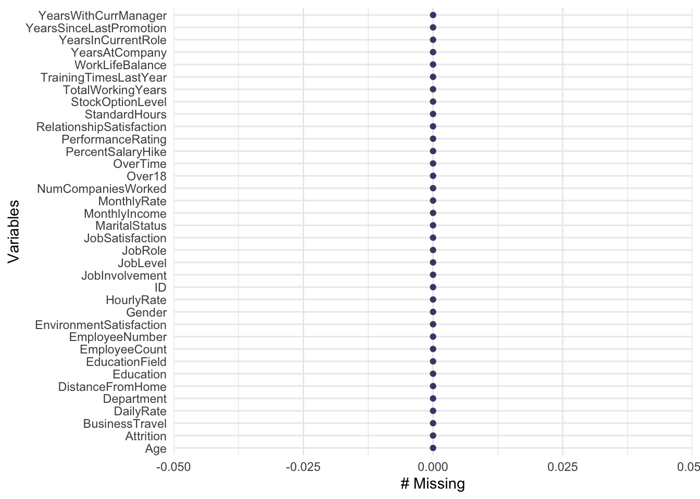
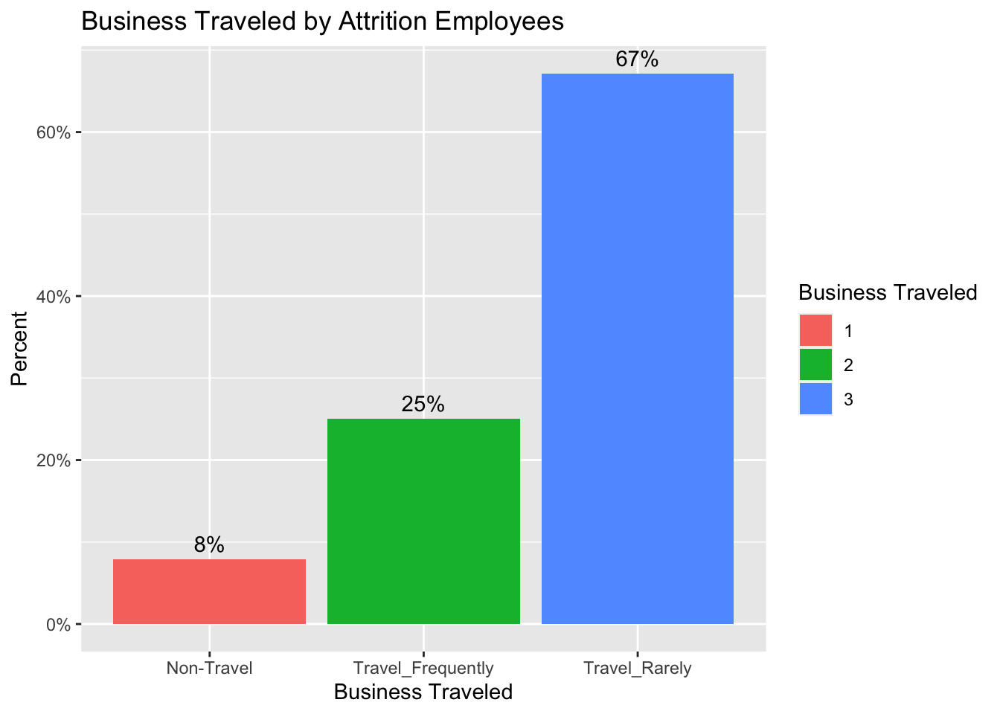
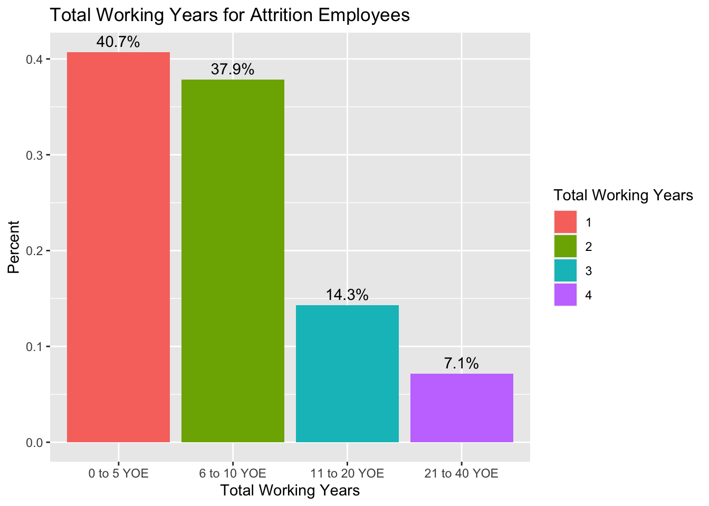
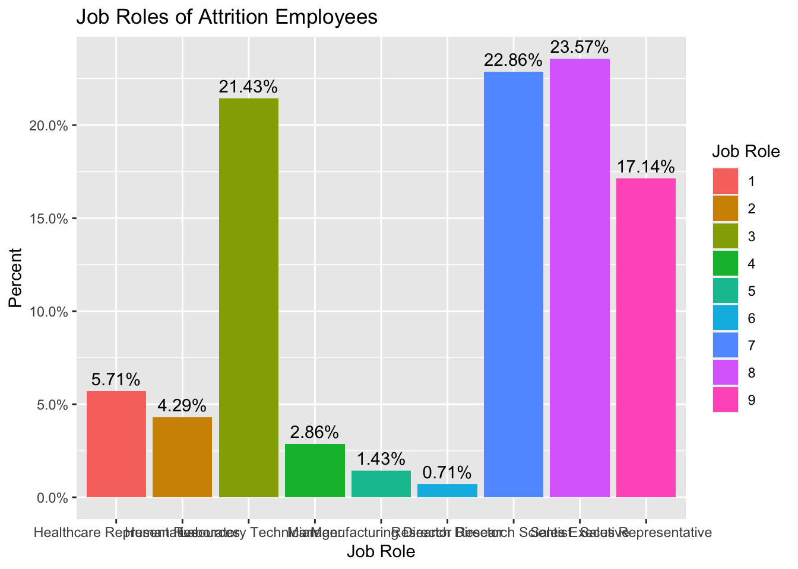
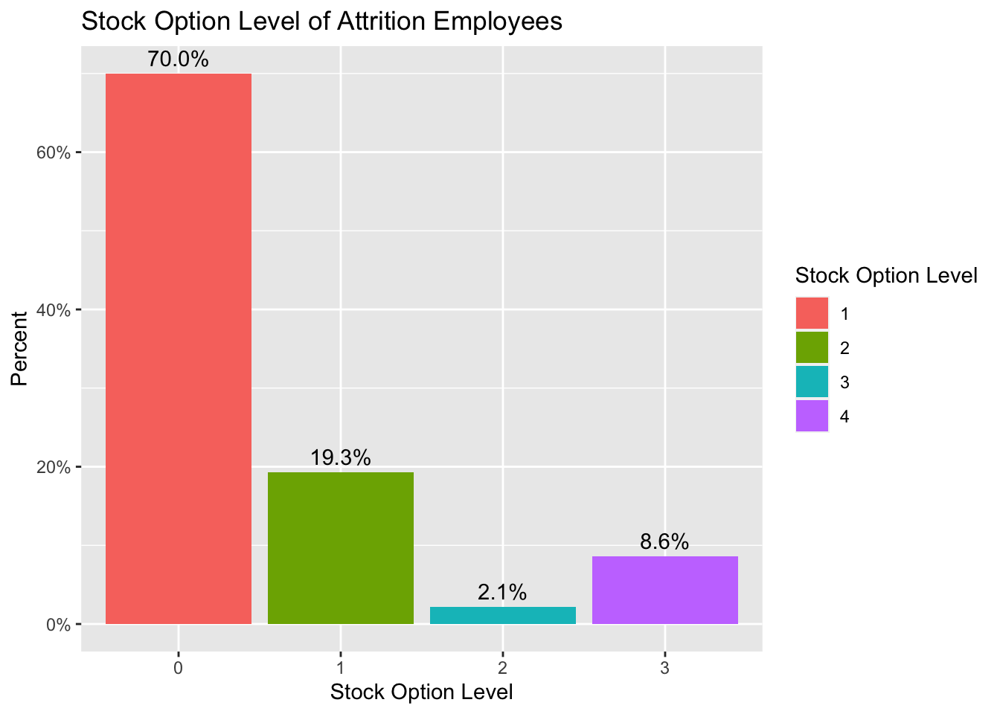

library(tidyverse)## ── Attaching packages ─────────────────────────────────────── tidyverse 1.3.0 ──## ✓ ggplot2 3.3.3 ✓ purrr 0.3.4
## ✓ tibble 3.1.0 ✓ dplyr 1.0.5
## ✓ tidyr 1.1.3 ✓ stringr 1.4.0
## ✓ readr 1.4.0 ✓ forcats 0.5.1## ── Conflicts ────────────────────────────────────────── tidyverse_conflicts() ──
## x dplyr::filter() masks stats::filter()
## x dplyr::lag() masks stats::lag()#Read all csvs
emp.data = read.csv("CaseStudy2-data.csv", header = TRUE)
newemp.data = read.csv("CaseStudy2-data.csv", header = TRUE)
case2.no.salary = read.csv("CaseStudy2CompSet No Salary.csv", header=TRUE)
case2.no.attrition = read.csv("CaseStudy2CompSet No Attrition.csv", header=TRUE)
#Convert columns to factor
cols <- c("JobSatisfaction","Education", "EnvironmentSatisfaction", "JobInvolvement", "JobLevel","PerformanceRating","RelationshipSatisfaction", "WorkLifeBalance","BusinessTravel","StockOptionLevel")
emp.data[cols] <- lapply(emp.data[cols], factor)
newemp.data[cols] <- lapply(newemp.data[cols], factor)
#Remove column with one factor for linear model
newemp.data$Over18 = NULL
case2.no.salary[cols] <- lapply(case2.no.salary[cols], factor)
case2.no.attrition[cols] <- lapply(case2.no.attrition[cols], factor)#Check for missing values
library(naniar)
gg_miss_var(emp.data)
#No missing values in employee.data
sapply(emp.data, function(x) sum(is.na(x)))## ID Age Attrition
## 0 0 0
## BusinessTravel DailyRate Department
## 0 0 0
## DistanceFromHome Education EducationField
## 0 0 0
## EmployeeCount EmployeeNumber EnvironmentSatisfaction
## 0 0 0
## Gender HourlyRate JobInvolvement
## 0 0 0
## JobLevel JobRole JobSatisfaction
## 0 0 0
## MaritalStatus MonthlyIncome MonthlyRate
## 0 0 0
## NumCompaniesWorked Over18 OverTime
## 0 0 0
## PercentSalaryHike PerformanceRating RelationshipSatisfaction
## 0 0 0
## StandardHours StockOptionLevel TotalWorkingYears
## 0 0 0
## TrainingTimesLastYear WorkLifeBalance YearsAtCompany
## 0 0 0
## YearsInCurrentRole YearsSinceLastPromotion YearsWithCurrManager
## 0 0 0#Separate employees by attrition into two dataframes called no.attrition and yes.attrition
no.attrition = emp.data %>% filter(Attrition == "No")
yes.attrition = emp.data %>% filter(Attrition == "Yes")#Attrition employees grouped by Business Travel
yes.attrition %>% group_by(BusinessTravel) %>%
summarise(
count = n(),
mean = mean(MonthlyIncome, na.rm = TRUE),
sd = sd(MonthlyIncome, na.rm = TRUE),
median = median(MonthlyIncome, na.rm = TRUE),
IQR = IQR(MonthlyIncome, na.rm = TRUE)
)## # A tibble: 3 x 6
## BusinessTravel count mean sd median IQR
## <fct> <int> <dbl> <dbl> <dbl> <dbl>
## 1 Non-Travel 11 5386. 4107. 4707 4806
## 2 Travel_Frequently 35 3623 2601. 2759 1872.
## 3 Travel_Rarely 94 5117. 4059. 3436 3923#We can see that 67% of those that left due to attrition rarely travel
# Business travel of Attrition Employees
yes.attrition %>% ggplot(aes(x = BusinessTravel, fill = factor(..x..), y=..prop.., group = 1)) + geom_bar() + ggtitle("Business Traveled by Attrition Employees") + geom_text(aes( label = scales::percent(..prop..),y= ..prop.. ), stat= "count", vjust = -.5) + scale_y_continuous(labels = scales::percent) + labs(y = "Percent", fill="Business Traveled", x = "Business Traveled")
yes.attrition %>% group_by(TotalWorkingYears) %>%
summarise(
count = n(),
mean = mean(MonthlyIncome, na.rm = TRUE),
sd = sd(MonthlyIncome, na.rm = TRUE),
median = median(MonthlyIncome, na.rm = TRUE),
IQR = IQR(MonthlyIncome, na.rm = TRUE)
)## # A tibble: 30 x 6
## TotalWorkingYears count mean sd median IQR
## <int> <int> <dbl> <dbl> <dbl> <dbl>
## 1 0 5 1689. 205. 1675 309
## 2 1 20 2083. 637. 2330. 933.
## 3 2 7 2689 433. 2742 392.
## 4 3 7 2426. 224. 2351 250
## 5 4 7 3538 988. 3730 1489
## 6 5 11 3367. 868. 3464 1266.
## 7 6 13 3997. 2547. 2546 2414
## 8 7 9 3438. 1386. 2759 2831
## 9 8 8 3969. 1794. 3032. 3406.
## 10 9 5 6549. 2082. 6074 2249
## # … with 20 more rows#Total Working Years of Attrition Employees
#Grouped by years of experience
yes.attrition %>% mutate(cut.workyrs = cut(TotalWorkingYears, breaks = c(-1,5,11,20,41), labels = c("0 to 5 YOE","6 to 10 YOE", "11 to 20 YOE","21 to 40 YOE"))) %>% ggplot(aes(x = cut.workyrs, fill = factor(..x..), y=..prop.., group = 1)) + geom_bar() + geom_text(aes( label = scales::percent(..prop..),y= ..prop.. ), stat= "count", vjust = -.5) + ggtitle("Total Working Years for Attrition Employees")+labs(y = "Percent", fill="Total Working Years", x = "Total Working Years")
#24 of 29 attrition employees are Sales Representatives
yes.attrition %>% group_by(JobRole) %>% summarise(count = n())## # A tibble: 9 x 2
## JobRole count
## <fct> <int>
## 1 Healthcare Representative 8
## 2 Human Resources 6
## 3 Laboratory Technician 30
## 4 Manager 4
## 5 Manufacturing Director 2
## 6 Research Director 1
## 7 Research Scientist 32
## 8 Sales Executive 33
## 9 Sales Representative 24no.attrition %>% group_by(JobRole) %>% summarise(count = n())## # A tibble: 9 x 2
## JobRole count
## <fct> <int>
## 1 Healthcare Representative 68
## 2 Human Resources 21
## 3 Laboratory Technician 123
## 4 Manager 47
## 5 Manufacturing Director 85
## 6 Research Director 50
## 7 Research Scientist 140
## 8 Sales Executive 167
## 9 Sales Representative 29#Job Roles of Attrition Employees
yes.attrition %>% ggplot(aes(x = JobRole, fill = factor(..x..), y=..prop.., group = 1)) + geom_bar() + ggtitle("Job Roles of Attrition Employees ") + geom_text(aes( label = scales::percent(..prop..),y= ..prop.. ), stat= "count", vjust = -.5) + scale_y_continuous(labels = scales::percent) + labs(y = "Percent", fill="Job Role", x = "Job Role")
#StockOptionLevel
#Over 70% of attrition employees had no stock options
yes.attrition %>% group_by(StockOptionLevel) %>% summarise(count = n())## # A tibble: 4 x 2
## StockOptionLevel count
## <fct> <int>
## 1 0 98
## 2 1 27
## 3 2 3
## 4 3 12yes.attrition %>% ggplot(aes(x = StockOptionLevel, fill = factor(..x..), y=..prop.., group = 1)) + geom_bar() + ggtitle("Stock Option Level of Attrition Employees") + geom_text(aes( label = scales::percent(..prop..),y= ..prop.. ), stat= "count", vjust = -.5) + scale_y_continuous(labels = scales::percent) + labs(y = "Percent", fill="Stock Option Level", x = "Stock Option Level")
library(onewaytests)
library(lsmeans)## Loading required package: emmeans## The 'lsmeans' package is now basically a front end for 'emmeans'.
## Users are encouraged to switch the rest of the way.
## See help('transition') for more information, including how to
## convert old 'lsmeans' objects and scripts to work with 'emmeans'.fit1 = aov(MonthlyIncome ~ JobRole, data = yes.attrition)
summary(fit1)## Df Sum Sq Mean Sq F value Pr(>F)
## JobRole 8 1.605e+09 200630592 67.78 <2e-16 ***
## Residuals 131 3.878e+08 2960017
## ---
## Signif. codes: 0 '***' 0.001 '**' 0.01 '*' 0.05 '.' 0.1 ' ' 1#Multiple Comparison Contrast
fit2 = lm(MonthlyIncome ~ JobRole, data = yes.attrition)
summary(fit2)##
## Call:
## lm(formula = MonthlyIncome ~ JobRole, data = yes.attrition)
##
## Residuals:
## Min 1Q Median 3Q Max
## -5745.2 -816.9 -266.9 794.0 5849.5
##
## Coefficients:
## Estimate Std. Error t value Pr(>|t|)
## (Intercept) 8388.8 608.3 13.791 < 2e-16 ***
## JobRoleHuman Resources -5955.6 929.2 -6.410 2.42e-09 ***
## JobRoleLaboratory Technician -5530.3 684.6 -8.078 3.77e-13 ***
## JobRoleManager 9205.5 1053.6 8.737 9.82e-15 ***
## JobRoleManufacturing Director -426.7 1360.2 -0.314 0.754
## JobRoleResearch Director 11156.2 1824.8 6.114 1.04e-08 ***
## JobRoleResearch Scientist -5469.4 680.1 -8.042 4.59e-13 ***
## JobRoleSales Executive -1044.2 678.0 -1.540 0.126
## JobRoleSales Representative -5973.2 702.4 -8.504 3.60e-14 ***
## ---
## Signif. codes: 0 '***' 0.001 '**' 0.01 '*' 0.05 '.' 0.1 ' ' 1
##
## Residual standard error: 1720 on 131 degrees of freedom
## Multiple R-squared: 0.8054, Adjusted R-squared: 0.7935
## F-statistic: 67.78 on 8 and 131 DF, p-value: < 2.2e-16leastsquare = lsmeans(fit2,"JobRole")
Contrasts = list(OtherJobRolesvsSalesRepresentative= c(-1,-1,-1,-1,-1,-1,-1,-1,8))
contrast(leastsquare,Contrasts)## contrast estimate SE df t.ratio p.value
## OtherJobRolesvsSalesRepresentative -49721 3771 131 -13.186 <.0001#Life sciences and medical field composed of over half the people that left. 90 out of 140
yes.attrition %>% group_by(EducationField) %>% summarise(count = n())## # A tibble: 6 x 2
## EducationField count
## <fct> <int>
## 1 Human Resources 4
## 2 Life Sciences 53
## 3 Marketing 20
## 4 Medical 37
## 5 Other 9
## 6 Technical Degree 17#High turnover in the research & development and sales department
yes.attrition %>% group_by(Department) %>% summarise(count = n())## # A tibble: 3 x 2
## Department count
## <fct> <int>
## 1 Human Resources 6
## 2 Research & Development 75
## 3 Sales 59no.attrition %>% group_by(Department) %>% summarise(count = n())## # A tibble: 3 x 2
## Department count
## <fct> <int>
## 1 Human Resources 29
## 2 Research & Development 487
## 3 Sales 214#Part 2 - Naive Bayes
library(class)
library(caret)## Loading required package: lattice##
## Attaching package: 'caret'## The following object is masked from 'package:purrr':
##
## liftlibrary(e1071)
#Using Naive Bayes
#Average Accuracy, Sensitivity, and Specificity for 100 iterations
#Average Sensitivity and Accuracy are above .60
iterations = 50
masterAcc = matrix(nrow = iterations)
masterSen = matrix(nrow = iterations)
masterSpe = matrix(nrow = iterations)
splitPerc = .70 #Training/Test split
for(j in 1:iterations)
{
trainIndices = sample(1:dim(emp.data)[1],round(splitPerc * dim(emp.data)[1]))
train = emp.data[trainIndices,]
test = emp.data[-trainIndices,]
model = naiveBayes(train[,c(2,4,5,9,12,14,15,16,17,20,22,24,25,29,30,31,32,33,34,36)],train$Attrition)
table(predict(model,test[,c(2,4,5,9,12,14,15,16,17,20,22,24,25,29,30,31,32,33,34,36)]),test$Attrition)
CM = confusionMatrix(table(predict(model,test[,c(2,4,5,9,12,14,15,16,17,20,22,24,25,29,30,31,32,33,34,36)]),test$Attrition))
masterAcc[j] = CM$overall[1]
masterSen[j] = CM$byClass["Sensitivity"]
masterSpe[j] = CM$byClass["Specificity"]
}
MeanAcc = colMeans(masterAcc)
MeanSen = colMeans(masterSen)
MeanSpe = colMeans(masterSpe)
MeanAcc## [1] 0.8054406MeanSen## [1] 0.8455027MeanSpe## [1] 0.6047554#Using Final Naive Bayes Model with Sensitivity/Specificity > 0.60
#Sensitivity : 0.9070
#Specificity : 0.6739
set.seed(75)
splitPerc = 0.70
trainIndices = sample(1:dim(emp.data)[1],round(splitPerc * dim(emp.data)[1]))
train = emp.data[trainIndices,]
test = emp.data[-trainIndices,]
modelA = naiveBayes(train[,c(2,4,5,9,12,14,15,16,17,20,22,24,25,29,30,31,32,33,34,36)],train$Attrition)
table(predict(modelA,test[,c(2,4,5,9,12,14,15,16,17,20,22,24,25,29,30,31,32,33,34,36)]),test$Attrition)##
## No Yes
## No 195 15
## Yes 20 31confusionMatrix(table(predict(modelA,test[,c(2,4,5,9,12,14,15,16,17,20,22,24,25,29,30,31,32,33,34,36)]),test$Attrition))## Confusion Matrix and Statistics
##
##
## No Yes
## No 195 15
## Yes 20 31
##
## Accuracy : 0.8659
## 95% CI : (0.8185, 0.9048)
## No Information Rate : 0.8238
## P-Value [Acc > NIR] : 0.04057
##
## Kappa : 0.5571
##
## Mcnemar's Test P-Value : 0.49896
##
## Sensitivity : 0.9070
## Specificity : 0.6739
## Pos Pred Value : 0.9286
## Neg Pred Value : 0.6078
## Prevalence : 0.8238
## Detection Rate : 0.7471
## Detection Prevalence : 0.8046
## Balanced Accuracy : 0.7904
##
## 'Positive' Class : No
## #Saved predictions into a dataframe and wrote to csv
attrition_preds=predict(modelA, newdata = case2.no.attrition)
my_submissionA = tibble("ID"= case2.no.attrition$ID, "Attrition" = attrition_preds)
write.csv(my_submissionA,"Case2PredictionsAjmera Attrition.csv",row.names = FALSE)#Part 3
library(olsrr)##
## Attaching package: 'olsrr'## The following object is masked from 'package:datasets':
##
## rivers#Fitted all variables into a linear model and used backwards elimination to remove insignificant variables
testfit = lm(MonthlyIncome ~ .,data = newemp.data)
summary(testfit)##
## Call:
## lm(formula = MonthlyIncome ~ ., data = newemp.data)
##
## Residuals:
## Min 1Q Median 3Q Max
## -3208.8 -586.6 -66.2 594.2 4305.8
##
## Coefficients: (2 not defined because of singularities)
## Estimate Std. Error t value Pr(>|t|)
## (Intercept) 2.796e+03 6.761e+02 4.135 3.92e-05 ***
## ID -1.991e-01 1.426e-01 -1.397 0.162907
## Age -1.743e+00 5.478e+00 -0.318 0.750373
## AttritionYes -2.288e+01 1.153e+02 -0.199 0.842659
## BusinessTravelTravel_Frequently 2.039e+02 1.362e+02 1.497 0.134775
## BusinessTravelTravel_Rarely 3.296e+02 1.156e+02 2.852 0.004455 **
## DailyRate 1.807e-01 8.820e-02 2.049 0.040828 *
## DepartmentResearch & Development 2.022e+02 4.635e+02 0.436 0.662792
## DepartmentSales -3.475e+02 4.780e+02 -0.727 0.467451
## DistanceFromHome -4.688e+00 4.429e+00 -1.059 0.290119
## Education2 -1.914e+01 1.315e+02 -0.146 0.884329
## Education3 -9.709e+01 1.208e+02 -0.804 0.421704
## Education4 5.111e+01 1.304e+02 0.392 0.695195
## Education5 -4.911e+02 2.353e+02 -2.088 0.037141 *
## EducationFieldLife Sciences 1.451e+00 3.555e+02 0.004 0.996745
## EducationFieldMarketing 2.075e+01 3.778e+02 0.055 0.956219
## EducationFieldMedical -6.244e+01 3.560e+02 -0.175 0.860800
## EducationFieldOther -5.540e+01 3.810e+02 -0.145 0.884429
## EducationFieldTechnical Degree -6.471e+01 3.698e+02 -0.175 0.861141
## EmployeeCount NA NA NA NA
## EmployeeNumber 7.118e-02 5.897e-02 1.207 0.227759
## EnvironmentSatisfaction2 -2.102e+01 1.116e+02 -0.188 0.850648
## EnvironmentSatisfaction3 1.007e+00 1.037e+02 0.010 0.992259
## EnvironmentSatisfaction4 -4.413e+01 1.028e+02 -0.429 0.667710
## GenderMale 7.895e+01 7.179e+01 1.100 0.271755
## HourlyRate 4.688e-02 1.757e+00 0.027 0.978723
## JobInvolvement2 -1.660e+02 1.676e+02 -0.990 0.322390
## JobInvolvement3 -1.804e+02 1.619e+02 -1.115 0.265367
## JobInvolvement4 -8.901e+01 1.943e+02 -0.458 0.646997
## JobLevel2 1.760e+03 1.478e+02 11.909 < 2e-16 ***
## JobLevel3 5.016e+03 1.962e+02 25.572 < 2e-16 ***
## JobLevel4 8.353e+03 2.954e+02 28.274 < 2e-16 ***
## JobLevel5 1.098e+04 3.474e+02 31.607 < 2e-16 ***
## JobRoleHuman Resources -8.049e+02 5.034e+02 -1.599 0.110185
## JobRoleLaboratory Technician -1.167e+03 1.820e+02 -6.413 2.43e-10 ***
## JobRoleManager 3.663e+03 2.888e+02 12.681 < 2e-16 ***
## JobRoleManufacturing Director 1.603e+02 1.646e+02 0.974 0.330401
## JobRoleResearch Director 3.622e+03 2.235e+02 16.207 < 2e-16 ***
## JobRoleResearch Scientist -9.798e+02 1.845e+02 -5.311 1.41e-07 ***
## JobRoleSales Executive 5.177e+02 3.469e+02 1.493 0.135957
## JobRoleSales Representative -6.995e+02 3.913e+02 -1.788 0.074227 .
## JobSatisfaction2 -7.339e+01 1.124e+02 -0.653 0.514063
## JobSatisfaction3 -2.309e+01 1.017e+02 -0.227 0.820423
## JobSatisfaction4 5.168e+01 1.012e+02 0.511 0.609729
## MaritalStatusMarried 8.024e+01 9.709e+01 0.826 0.408797
## MaritalStatusSingle 1.112e+02 1.526e+02 0.729 0.466333
## MonthlyRate -4.932e-03 5.010e-03 -0.984 0.325255
## NumCompaniesWorked 1.236e+01 1.629e+01 0.759 0.448366
## OverTimeYes 2.495e+01 8.155e+01 0.306 0.759684
## PercentSalaryHike 1.755e+01 1.529e+01 1.147 0.251604
## PerformanceRating4 -2.555e+02 1.558e+02 -1.640 0.101469
## RelationshipSatisfaction2 9.804e+01 1.128e+02 0.869 0.384963
## RelationshipSatisfaction3 -2.587e+01 1.025e+02 -0.252 0.800831
## RelationshipSatisfaction4 3.353e+01 1.016e+02 0.330 0.741497
## StandardHours NA NA NA NA
## StockOptionLevel1 1.131e+02 1.190e+02 0.951 0.342002
## StockOptionLevel2 2.975e+01 1.598e+02 0.186 0.852342
## StockOptionLevel3 -1.445e+01 1.814e+02 -0.080 0.936554
## TotalWorkingYears 4.248e+01 1.095e+01 3.879 0.000113 ***
## TrainingTimesLastYear 2.403e+01 2.799e+01 0.859 0.390799
## WorkLifeBalance2 6.876e+01 1.689e+02 0.407 0.684123
## WorkLifeBalance3 8.769e+01 1.589e+02 0.552 0.581216
## WorkLifeBalance4 -4.886e+01 1.849e+02 -0.264 0.791603
## YearsAtCompany -8.145e+00 1.327e+01 -0.614 0.539410
## YearsInCurrentRole 1.572e+01 1.665e+01 0.944 0.345497
## YearsSinceLastPromotion 1.897e+01 1.498e+01 1.266 0.205912
## YearsWithCurrManager -1.121e+01 1.632e+01 -0.687 0.492381
## ---
## Signif. codes: 0 '***' 0.001 '**' 0.01 '*' 0.05 '.' 0.1 ' ' 1
##
## Residual standard error: 1009 on 805 degrees of freedom
## Multiple R-squared: 0.9554, Adjusted R-squared: 0.9519
## F-statistic: 269.5 on 64 and 805 DF, p-value: < 2.2e-16ols_step_backward_p(testfit,prem = 0.05,details = TRUE)## Backward Elimination Method
## ---------------------------
##
## Candidate Terms:
##
## 1 . ID
## 2 . Age
## 3 . Attrition
## 4 . BusinessTravel
## 5 . DailyRate
## 6 . Department
## 7 . DistanceFromHome
## 8 . Education
## 9 . EducationField
## 10 . EmployeeCount
## 11 . EmployeeNumber
## 12 . EnvironmentSatisfaction
## 13 . Gender
## 14 . HourlyRate
## 15 . JobInvolvement
## 16 . JobLevel
## 17 . JobRole
## 18 . JobSatisfaction
## 19 . MaritalStatus
## 20 . MonthlyRate
## 21 . NumCompaniesWorked
## 22 . OverTime
## 23 . PercentSalaryHike
## 24 . PerformanceRating
## 25 . RelationshipSatisfaction
## 26 . StandardHours
## 27 . StockOptionLevel
## 28 . TotalWorkingYears
## 29 . TrainingTimesLastYear
## 30 . WorkLifeBalance
## 31 . YearsAtCompany
## 32 . YearsInCurrentRole
## 33 . YearsSinceLastPromotion
## 34 . YearsWithCurrManager
##
## We are eliminating variables based on p value...## Note: model has aliased coefficients
## sums of squares computed by model comparison## - HourlyRate
##
## Backward Elimination: Step 1
##
## Variable HourlyRate Removed
##
## Model Summary
## -------------------------------------------------------------------
## R 0.977 RMSE 1008.078
## R-Squared 0.955 Coef. Var 15.775
## Adj. R-Squared 0.952 MSE 1016221.303
## Pred R-Squared 0.948 MAE 740.788
## -------------------------------------------------------------------
## RMSE: Root Mean Square Error
## MSE: Mean Square Error
## MAE: Mean Absolute Error
##
## ANOVA
## -------------------------------------------------------------------------------
## Sum of
## Squares DF Mean Square F Sig.
## -------------------------------------------------------------------------------
## Regression 17550550017.322 63 278580159.005 274.133 0.0000
## Residual 819074369.874 806 1016221.303
## Total 18369624387.195 869
## -------------------------------------------------------------------------------
##
## Parameter Estimates
## ----------------------------------------------------------------------------------------------------------------------
## model Beta Std. Error Std. Beta t Sig lower upper
## ----------------------------------------------------------------------------------------------------------------------
## (Intercept) 2798.589 667.900 4.190 0.000 1487.562 4109.617
## ID -0.199 0.142 -0.011 -1.397 0.163 -0.479 0.081
## Age -1.738 5.471 -0.003 -0.318 0.751 -12.478 9.002
## AttritionYes -22.769 115.101 -0.002 -0.198 0.843 -248.703 203.164
## BusinessTravelTravel_Frequently 204.040 136.100 0.017 1.499 0.134 -63.113 471.193
## BusinessTravelTravel_Rarely 329.627 115.493 0.033 2.854 0.004 102.924 556.330
## DailyRate 0.181 0.088 0.016 2.054 0.040 0.008 0.354
## DepartmentResearch & Development 202.409 463.094 0.021 0.437 0.662 -706.603 1111.421
## DepartmentSales -347.366 477.711 -0.035 -0.727 0.467 -1285.070 590.339
## DistanceFromHome -4.682 4.420 -0.008 -1.059 0.290 -13.359 3.994
## Education2 -19.161 131.439 -0.002 -0.146 0.884 -277.164 238.841
## Education3 -97.116 120.697 -0.010 -0.805 0.421 -334.034 139.802
## Education4 51.023 130.275 0.005 0.392 0.695 -204.694 306.741
## Education5 -490.968 235.030 -0.018 -2.089 0.037 -952.312 -29.625
## EducationFieldLife Sciences 1.388 355.288 0.000 0.004 0.997 -696.011 698.787
## EducationFieldMarketing 20.776 377.550 0.001 0.055 0.956 -720.321 761.873
## EducationFieldMedical -62.607 355.681 -0.006 -0.176 0.860 -760.776 635.563
## EducationFieldOther -55.576 380.733 -0.003 -0.146 0.884 -802.921 691.769
## EducationFieldTechnical Degree -64.637 369.556 -0.004 -0.175 0.861 -790.042 660.769
## EmployeeCount NA 0.059 0.000 1.208 0.227 NA NA
## EmployeeNumber 0.071 111.511 -2.764 -0.188 0.851 -0.044 0.187
## EnvironmentSatisfaction2 -21.011 103.619 0.000 0.009 0.993 -239.898 197.875
## EnvironmentSatisfaction3 0.948 102.691 -0.004 -0.430 0.667 -202.447 204.344
## EnvironmentSatisfaction4 -44.182 71.732 0.008 1.101 0.271 -245.756 157.392
## GenderMale 78.978 167.309 -0.018 -0.991 0.322 -61.826 219.783
## JobInvolvement2 -165.752 161.489 -0.017 -1.116 0.265 -494.164 162.660
## JobInvolvement3 -180.159 193.709 -0.009 -0.458 0.647 -497.148 136.831
## JobInvolvement4 -88.649 147.552 0.111 11.927 0.000 -468.883 291.584
## JobLevel2 1759.858 195.446 0.524 25.663 0.000 1470.225 2049.490
## JobLevel3 5015.737 294.423 0.652 28.369 0.000 4632.093 5399.381
## JobLevel4 8352.565 346.499 0.605 31.684 0.000 7774.638 8930.492
## JobLevel5 10978.609 503.009 -0.035 -1.601 0.110 10298.463 11658.755
## JobRoleHuman Resources -805.076 181.709 -0.044 -6.424 0.000 -1792.437 182.286
## JobRoleLaboratory Technician -1167.249 288.478 0.303 12.697 0.000 -1523.927 -810.570
## JobRoleManager 3662.848 164.478 0.008 0.974 0.330 3096.591 4229.105
## JobRoleManufacturing Director 160.236 223.327 0.236 16.217 0.000 -162.619 483.091
## JobRoleResearch Director 3621.724 184.204 -0.050 -5.320 0.000 3183.354 4060.095
## JobRoleResearch Scientist -980.037 346.655 0.045 1.493 0.136 -1341.614 -618.461
## JobRoleSales Executive 517.657 390.995 -0.064 -1.789 0.074 -162.797 1198.110
## JobRoleSales Representative -699.628 112.346 -0.004 -0.653 0.514 -1467.117 67.861
## JobSatisfaction2 -73.382 101.424 -0.002 -0.229 0.819 -293.906 147.143
## JobSatisfaction3 -23.261 100.912 0.005 0.510 0.610 -222.348 175.826
## JobSatisfaction4 51.499 96.926 0.008 0.829 0.407 -146.582 249.579
## MaritalStatusMarried 80.357 152.444 0.012 0.730 0.466 -109.900 270.614
## MaritalStatusSingle 111.235 0.005 0.000 -0.985 0.325 -188.000 410.469
## MonthlyRate -0.005 16.278 19.095 0.759 0.448 -0.015 0.005
## NumCompaniesWorked 12.351 81.481 0.014 0.306 0.760 -19.601 44.303
## OverTimeYes 24.911 15.273 0.002 1.148 0.251 -135.029 184.851
## PercentSalaryHike 17.531 155.679 -0.204 -1.641 0.101 -12.450 47.511
## PerformanceRating4 -255.399 112.666 0.008 0.871 0.384 -560.983 50.184
## RelationshipSatisfaction2 98.130 102.438 -0.002 -0.252 0.801 -123.023 319.284
## RelationshipSatisfaction3 -25.865 101.529 0.003 0.331 0.741 -226.942 175.211
## RelationshipSatisfaction4 33.600 118.913 0.011 0.951 0.342 -165.693 232.894
## StandardHours NA 159.225 0.000 0.189 0.850 NA NA
## StockOptionLevel1 113.093 181.220 -0.002 -0.079 0.937 -120.323 346.510
## StockOptionLevel2 30.075 10.938 0.003 3.885 0.000 -282.470 342.621
## StockOptionLevel3 -14.303 27.969 0.001 0.859 0.390 -370.022 341.415
## TotalWorkingYears 42.493 168.834 0.112 0.407 0.684 21.023 63.963
## TrainingTimesLastYear 24.035 158.800 0.024 0.552 0.581 -30.865 78.935
## WorkLifeBalance2 68.728 184.696 -0.004 -0.265 0.791 -262.678 400.133
## WorkLifeBalance3 87.647 13.257 -0.001 -0.614 0.539 -224.064 399.358
## WorkLifeBalance4 -48.968 16.642 0.001 0.944 0.345 -411.511 313.574
## YearsAtCompany -8.140 14.973 0.025 1.267 0.206 -34.161 17.882
## YearsInCurrentRole 15.716 16.306 -0.009 -0.688 0.492 -16.951 48.383
## YearsSinceLastPromotion 18.964 NA 0.000 NA NA -10.427 48.355
## YearsWithCurrManager -11.212 NA -0.001 NA NA -43.218 20.794
## ----------------------------------------------------------------------------------------------------------------------## Note: model has aliased coefficients
## sums of squares computed by model comparison## - EducationField
##
## Backward Elimination: Step 2
##
## Variable EducationField Removed
##
## Model Summary
## -------------------------------------------------------------------
## R 0.977 RMSE 1005.488
## R-Squared 0.955 Coef. Var 15.735
## Adj. R-Squared 0.952 MSE 1011005.734
## Pred R-Squared 0.949 MAE 741.411
## -------------------------------------------------------------------
## RMSE: Root Mean Square Error
## MSE: Mean Square Error
## MAE: Mean Absolute Error
##
## ANOVA
## -------------------------------------------------------------------------------
## Sum of
## Squares DF Mean Square F Sig.
## -------------------------------------------------------------------------------
## Regression 17549698737.137 58 302581012.709 299.287 0.0000
## Residual 819925650.058 811 1011005.734
## Total 18369624387.195 869
## -------------------------------------------------------------------------------
##
## Parameter Estimates
## ----------------------------------------------------------------------------------------------------------------------
## model Beta Std. Error Std. Beta t Sig lower upper
## ----------------------------------------------------------------------------------------------------------------------
## (Intercept) 2790.946 643.521 4.337 0.000 1527.784 4054.108
## ID -0.207 0.141 -0.011 -1.465 0.143 -0.484 0.070
## Age -1.338 5.421 -0.003 -0.247 0.805 -11.979 9.303
## AttritionYes -22.736 114.233 -0.002 -0.199 0.842 -246.963 201.491
## BusinessTravelTravel_Frequently 208.000 135.602 0.017 1.534 0.125 -58.173 474.173
## BusinessTravelTravel_Rarely 334.615 114.806 0.033 2.915 0.004 109.263 559.967
## DailyRate 0.178 0.088 0.016 2.033 0.042 0.006 0.350
## DepartmentResearch & Development 180.609 427.738 0.019 0.422 0.673 -658.994 1020.213
## DepartmentSales -334.093 438.193 -0.034 -0.762 0.446 -1194.218 526.033
## DistanceFromHome -4.769 4.398 -0.008 -1.084 0.278 -13.401 3.863
## Education2 -18.983 130.321 -0.002 -0.146 0.884 -274.788 236.823
## Education3 -95.832 120.202 -0.010 -0.797 0.426 -331.775 140.111
## Education4 54.197 129.295 0.005 0.419 0.675 -199.594 307.989
## Education5 -483.926 233.212 -0.018 -2.075 0.038 -941.697 -26.155
## EmployeeCount NA 0.059 0.000 1.164 0.245 NA NA
## EmployeeNumber 0.068 111.019 -2.855 -0.196 0.845 -0.047 0.183
## EnvironmentSatisfaction2 -21.708 103.222 0.000 0.002 0.998 -239.626 196.211
## EnvironmentSatisfaction3 0.248 102.074 -0.004 -0.443 0.658 -202.366 202.862
## EnvironmentSatisfaction4 -45.207 71.449 0.008 1.110 0.267 -245.567 155.153
## GenderMale 79.344 166.547 -0.017 -0.950 0.342 -60.903 219.590
## JobInvolvement2 -158.213 160.665 -0.017 -1.075 0.283 -485.127 168.700
## JobInvolvement3 -172.781 193.107 -0.009 -0.438 0.662 -488.149 142.588
## JobInvolvement4 -84.496 146.957 0.111 11.980 0.000 -463.545 294.554
## JobLevel2 1760.578 194.541 0.524 25.792 0.000 1472.117 2049.039
## JobLevel3 5017.532 292.659 0.653 28.560 0.000 4635.669 5399.395
## JobLevel4 8358.254 345.298 0.606 31.817 0.000 7783.796 8932.712
## JobLevel5 10986.291 500.762 -0.036 -1.620 0.106 10308.508 11664.075
## JobRoleHuman Resources -811.100 180.828 -0.044 -6.458 0.000 -1794.042 171.843
## JobRoleLaboratory Technician -1167.866 287.204 0.302 12.712 0.000 -1522.812 -812.919
## JobRoleManager 3650.887 163.820 0.008 1.010 0.313 3087.136 4214.637
## JobRoleManufacturing Director 165.391 222.462 0.236 16.261 0.000 -156.170 486.952
## JobRoleResearch Director 3617.533 183.609 -0.050 -5.340 0.000 3180.864 4054.203
## JobRoleResearch Scientist -980.393 345.300 0.044 1.470 0.142 -1340.798 -619.989
## JobRoleSales Executive 507.432 389.322 -0.065 -1.836 0.067 -170.356 1185.220
## JobRoleSales Representative -714.869 111.900 -0.004 -0.661 0.509 -1479.067 49.329
## JobSatisfaction2 -73.926 101.139 -0.002 -0.241 0.809 -293.575 145.722
## JobSatisfaction3 -24.404 100.616 0.005 0.517 0.605 -222.929 174.120
## JobSatisfaction4 52.003 96.392 0.008 0.842 0.400 -145.495 249.501
## MaritalStatusMarried 81.156 151.564 0.013 0.776 0.438 -108.051 270.363
## MaritalStatusSingle 117.593 0.005 0.000 -1.026 0.305 -179.910 415.096
## MonthlyRate -0.005 16.190 18.639 0.745 0.457 -0.015 0.005
## NumCompaniesWorked 12.056 81.042 0.013 0.297 0.766 -19.722 43.834
## OverTimeYes 24.106 15.134 0.002 1.136 0.256 -134.971 183.184
## PercentSalaryHike 17.190 154.837 -0.201 -1.624 0.105 -12.517 46.897
## PerformanceRating4 -251.434 112.065 0.007 0.844 0.399 -555.363 52.495
## RelationshipSatisfaction2 94.624 101.743 -0.003 -0.305 0.760 -125.348 314.596
## RelationshipSatisfaction3 -31.047 100.954 0.003 0.292 0.770 -230.757 168.664
## RelationshipSatisfaction4 29.484 117.930 0.012 1.006 0.315 -168.677 227.646
## StandardHours NA 158.331 0.000 0.234 0.815 NA NA
## StockOptionLevel1 118.643 179.788 -0.001 -0.037 0.970 -112.842 350.127
## StockOptionLevel2 37.113 10.883 0.003 3.877 0.000 -273.673 347.899
## StockOptionLevel3 -6.735 27.702 0.001 0.763 0.445 -359.639 346.170
## TotalWorkingYears 42.194 168.005 0.103 0.376 0.707 20.833 63.555
## TrainingTimesLastYear 21.150 158.092 0.024 0.544 0.586 -33.227 75.526
## WorkLifeBalance2 63.196 183.596 -0.005 -0.317 0.751 -266.580 392.971
## WorkLifeBalance3 86.050 13.180 -0.001 -0.618 0.537 -224.269 396.369
## WorkLifeBalance4 -58.235 16.553 0.001 0.951 0.342 -418.614 302.144
## YearsAtCompany -8.142 14.874 0.024 1.236 0.217 -34.013 17.730
## YearsInCurrentRole 15.749 16.255 -0.009 -0.692 0.489 -16.744 48.242
## YearsSinceLastPromotion 18.383 NA 0.000 NA NA -10.813 47.579
## YearsWithCurrManager -11.255 NA -0.001 NA NA -43.163 20.652
## ----------------------------------------------------------------------------------------------------------------------## Note: model has aliased coefficients
## sums of squares computed by model comparison## - EnvironmentSatisfaction
##
## Backward Elimination: Step 3
##
## Variable EnvironmentSatisfaction Removed
##
## Model Summary
## -------------------------------------------------------------------
## R 0.977 RMSE 1003.830
## R-Squared 0.955 Coef. Var 15.709
## Adj. R-Squared 0.952 MSE 1007674.686
## Pred R-Squared 0.949 MAE 742.007
## -------------------------------------------------------------------
## RMSE: Root Mean Square Error
## MSE: Mean Square Error
## MAE: Mean Absolute Error
##
## ANOVA
## -------------------------------------------------------------------------------
## Sum of
## Squares DF Mean Square F Sig.
## -------------------------------------------------------------------------------
## Regression 17549377192.531 55 319079585.319 316.649 0.0000
## Residual 820247194.664 814 1007674.686
## Total 18369624387.195 869
## -------------------------------------------------------------------------------
##
## Parameter Estimates
## ----------------------------------------------------------------------------------------------------------------------
## model Beta Std. Error Std. Beta t Sig lower upper
## ----------------------------------------------------------------------------------------------------------------------
## (Intercept) 2782.675 637.538 4.365 0.000 1531.262 4034.088
## ID -0.205 0.141 -0.011 -1.457 0.145 -0.482 0.071
## Age -1.340 5.412 -0.003 -0.248 0.805 -11.963 9.283
## AttritionYes -20.247 112.818 -0.002 -0.179 0.858 -241.696 201.201
## BusinessTravelTravel_Frequently 206.110 135.334 0.017 1.523 0.128 -59.535 471.754
## BusinessTravelTravel_Rarely 331.200 114.323 0.033 2.897 0.004 106.797 555.603
## DailyRate 0.177 0.087 0.015 2.024 0.043 0.005 0.348
## DepartmentResearch & Development 176.240 426.598 0.018 0.413 0.680 -661.122 1013.603
## DepartmentSales -333.923 436.426 -0.034 -0.765 0.444 -1190.576 522.730
## DistanceFromHome -4.658 4.384 -0.008 -1.062 0.288 -13.262 3.947
## Education2 -21.240 129.943 -0.002 -0.163 0.870 -276.304 233.824
## Education3 -95.362 119.832 -0.010 -0.796 0.426 -330.578 139.855
## Education4 55.300 128.958 0.005 0.429 0.668 -197.829 308.428
## Education5 -489.096 232.571 -0.018 -2.103 0.036 -945.606 -32.585
## EmployeeCount NA 0.058 0.000 1.136 0.256 NA NA
## EmployeeNumber 0.066 71.260 10.210 1.089 0.276 -0.048 0.181
## GenderMale 77.621 166.156 -0.017 -0.949 0.343 -62.253 217.495
## JobInvolvement2 -157.655 160.276 -0.016 -1.074 0.283 -483.800 168.489
## JobInvolvement3 -172.163 192.719 -0.009 -0.433 0.665 -486.765 142.439
## JobInvolvement4 -83.532 146.584 0.111 12.004 0.000 -461.816 294.752
## JobLevel2 1759.591 194.205 0.524 25.842 0.000 1471.865 2047.318
## JobLevel3 5018.742 292.060 0.652 28.614 0.000 4637.540 5399.943
## JobLevel4 8356.974 343.869 0.605 31.922 0.000 7783.696 8930.253
## JobLevel5 10976.959 499.732 -0.036 -1.622 0.105 10301.984 11651.934
## JobRoleHuman Resources -810.469 180.517 -0.044 -6.466 0.000 -1791.385 170.447
## JobRoleLaboratory Technician -1167.275 286.420 0.303 12.758 0.000 -1521.608 -812.941
## JobRoleManager 3654.247 163.427 0.008 1.004 0.315 3092.038 4216.457
## JobRoleManufacturing Director 164.159 221.022 0.237 16.392 0.000 -156.630 484.948
## JobRoleResearch Director 3622.913 183.140 -0.050 -5.346 0.000 3189.073 4056.754
## JobRoleResearch Scientist -979.131 344.445 0.044 1.468 0.142 -1338.613 -619.649
## JobRoleSales Executive 505.652 388.425 -0.065 -1.839 0.066 -170.453 1181.757
## JobRoleSales Representative -714.445 111.402 -0.004 -0.685 0.494 -1476.877 47.987
## JobSatisfaction2 -76.276 100.761 -0.002 -0.237 0.813 -294.945 142.394
## JobSatisfaction3 -23.890 100.347 0.005 0.522 0.602 -221.671 173.892
## JobSatisfaction4 52.397 96.096 0.008 0.843 0.399 -144.573 249.367
## MaritalStatusMarried 81.041 151.127 0.012 0.753 0.452 -107.584 269.667
## MaritalStatusSingle 113.735 0.005 0.000 -1.037 0.300 -182.910 410.380
## MonthlyRate -0.005 16.149 18.541 0.743 0.458 -0.015 0.005
## NumCompaniesWorked 11.992 80.424 0.012 0.272 0.785 -19.707 43.691
## OverTimeYes 21.902 15.080 0.002 1.151 0.250 -135.962 179.765
## PercentSalaryHike 17.352 154.485 -0.201 -1.624 0.105 -12.249 46.953
## PerformanceRating4 -250.829 111.845 0.007 0.848 0.397 -554.064 52.406
## RelationshipSatisfaction2 94.798 101.500 -0.003 -0.301 0.764 -124.741 314.337
## RelationshipSatisfaction3 -30.505 100.757 0.003 0.288 0.773 -229.738 168.728
## RelationshipSatisfaction4 29.061 117.580 0.012 0.988 0.324 -168.712 226.834
## StandardHours NA 157.894 0.000 0.220 0.826 NA NA
## StockOptionLevel1 116.113 179.418 -0.001 -0.047 0.963 -114.681 346.908
## StockOptionLevel2 34.733 10.854 0.003 3.902 0.000 -275.195 344.661
## StockOptionLevel3 -8.435 27.636 0.001 0.771 0.441 -360.612 343.742
## TotalWorkingYears 42.356 167.330 0.099 0.361 0.718 21.051 63.662
## TrainingTimesLastYear 21.319 157.677 0.023 0.524 0.600 -32.928 75.566
## WorkLifeBalance2 60.481 183.171 -0.006 -0.333 0.739 -267.968 388.931
## WorkLifeBalance3 82.635 13.135 -0.001 -0.609 0.542 -226.867 392.137
## WorkLifeBalance4 -61.049 16.465 0.001 0.956 0.339 -420.592 298.494
## YearsAtCompany -8.004 14.781 0.024 1.226 0.220 -33.787 17.779
## YearsInCurrentRole 15.745 16.210 -0.009 -0.702 0.483 -16.575 48.064
## YearsSinceLastPromotion 18.124 NA 0.000 NA NA -10.890 47.138
## YearsWithCurrManager -11.376 NA -0.001 NA NA -43.195 20.443
## ----------------------------------------------------------------------------------------------------------------------## Note: model has aliased coefficients
## sums of squares computed by model comparison## - Attrition
##
## Backward Elimination: Step 4
##
## Variable Attrition Removed
##
## Model Summary
## -------------------------------------------------------------------
## R 0.977 RMSE 1003.234
## R-Squared 0.955 Coef. Var 15.699
## Adj. R-Squared 0.952 MSE 1006478.100
## Pred R-Squared 0.949 MAE 742.260
## -------------------------------------------------------------------
## RMSE: Root Mean Square Error
## MSE: Mean Square Error
## MAE: Mean Absolute Error
##
## ANOVA
## -------------------------------------------------------------------------------
## Sum of
## Squares DF Mean Square F Sig.
## -------------------------------------------------------------------------------
## Regression 17549344735.620 54 324987865.474 322.896 0.0000
## Residual 820279651.576 815 1006478.100
## Total 18369624387.195 869
## -------------------------------------------------------------------------------
##
## Parameter Estimates
## ----------------------------------------------------------------------------------------------------------------------
## model Beta Std. Error Std. Beta t Sig lower upper
## ----------------------------------------------------------------------------------------------------------------------
## (Intercept) 2767.344 631.414 4.383 0.000 1527.955 4006.733
## ID -0.206 0.141 -0.011 -1.461 0.145 -0.482 0.071
## Age -1.273 5.396 -0.002 -0.236 0.814 -11.864 9.319
## BusinessTravelTravel_Frequently 204.162 134.818 0.017 1.514 0.130 -60.469 468.792
## BusinessTravelTravel_Rarely 330.574 114.202 0.033 2.895 0.004 106.409 554.739
## DailyRate 0.177 0.087 0.015 2.030 0.043 0.006 0.348
## DepartmentResearch & Development 174.531 426.239 0.018 0.409 0.682 -662.124 1011.186
## DepartmentSales -336.090 436.000 -0.034 -0.771 0.441 -1191.905 519.725
## DistanceFromHome -4.747 4.353 -0.008 -1.091 0.276 -13.291 3.797
## Education2 -22.169 129.763 -0.002 -0.171 0.864 -276.878 232.541
## Education3 -96.082 119.694 -0.010 -0.803 0.422 -331.027 138.863
## Education4 54.732 128.842 0.005 0.425 0.671 -198.169 307.634
## Education5 -489.165 232.433 -0.018 -2.105 0.036 -945.403 -32.927
## EmployeeCount NA 0.058 0.000 1.143 0.253 NA NA
## EmployeeNumber 0.067 71.199 10.173 1.086 0.278 -0.048 0.181
## GenderMale 77.335 164.190 -0.016 -0.933 0.351 -62.421 217.091
## JobInvolvement2 -153.196 157.116 -0.016 -1.060 0.289 -475.480 169.089
## JobInvolvement3 -166.563 189.444 -0.008 -0.408 0.683 -474.963 141.836
## JobInvolvement4 -77.292 145.570 0.111 12.108 0.000 -449.146 294.563
## JobLevel2 1762.545 193.920 0.524 25.888 0.000 1476.808 2048.282
## JobLevel3 5020.198 291.711 0.653 28.654 0.000 4639.556 5400.840
## JobLevel4 8358.792 343.632 0.605 31.941 0.000 7786.200 8931.385
## JobLevel5 10976.107 499.369 -0.036 -1.626 0.104 10301.599 11650.615
## JobRoleHuman Resources -811.930 180.390 -0.044 -6.468 0.000 -1792.131 168.271
## JobRoleLaboratory Technician -1166.790 286.206 0.303 12.771 0.000 -1520.873 -812.707
## JobRoleManager 3655.155 163.175 0.008 1.014 0.311 3093.368 4216.941
## JobRoleManufacturing Director 165.438 220.439 0.237 16.447 0.000 -154.855 485.731
## JobRoleResearch Director 3625.450 182.851 -0.050 -5.347 0.000 3192.755 4058.144
## JobRoleResearch Scientist -977.671 344.234 0.044 1.468 0.143 -1336.585 -618.758
## JobRoleSales Executive 505.289 387.854 -0.066 -1.850 0.065 -170.401 1180.979
## JobRoleSales Representative -717.360 111.236 -0.004 -0.678 0.498 -1478.671 43.951
## JobSatisfaction2 -75.431 100.551 -0.002 -0.228 0.820 -293.774 142.913
## JobSatisfaction3 -22.905 99.234 0.005 0.554 0.580 -220.275 174.466
## JobSatisfaction4 55.001 95.886 0.008 0.835 0.404 -139.783 249.785
## MaritalStatusMarried 80.068 150.977 0.012 0.748 0.455 -108.145 268.280
## MaritalStatusSingle 112.966 0.005 0.000 -1.035 0.301 -183.383 409.315
## MonthlyRate -0.005 16.006 17.965 0.726 0.468 -0.015 0.005
## NumCompaniesWorked 11.620 76.963 0.010 0.230 0.818 -19.798 43.037
## OverTimeYes 17.740 15.071 0.002 1.151 0.250 -133.328 168.808
## PercentSalaryHike 17.343 154.351 -0.201 -1.629 0.104 -12.240 46.926
## PerformanceRating4 -251.471 111.593 0.007 0.860 0.390 -554.444 51.502
## RelationshipSatisfaction2 95.954 101.029 -0.002 -0.286 0.775 -123.090 314.998
## RelationshipSatisfaction3 -28.866 100.243 0.003 0.307 0.759 -227.174 169.441
## RelationshipSatisfaction4 30.775 116.486 0.012 1.021 0.308 -165.991 227.541
## StandardHours NA 157.167 0.000 0.237 0.813 NA NA
## StockOptionLevel1 118.892 179.304 -0.001 -0.045 0.964 -109.756 347.541
## StockOptionLevel2 37.270 10.835 0.003 3.918 0.000 -271.230 345.770
## StockOptionLevel3 -8.132 27.547 0.001 0.787 0.431 -360.084 343.820
## TotalWorkingYears 42.451 166.073 0.105 0.385 0.700 21.183 63.718
## TrainingTimesLastYear 21.680 156.030 0.024 0.555 0.579 -32.391 75.751
## WorkLifeBalance2 64.010 181.709 -0.005 -0.314 0.754 -261.971 389.990
## WorkLifeBalance3 86.599 13.118 -0.001 -0.617 0.537 -219.670 392.867
## WorkLifeBalance4 -57.059 16.440 0.001 0.965 0.335 -413.731 299.613
## YearsAtCompany -8.096 14.717 0.023 1.216 0.224 -33.844 17.653
## YearsInCurrentRole 15.872 16.189 -0.009 -0.696 0.487 -16.398 48.142
## YearsSinceLastPromotion 17.894 NA 0.000 NA NA -10.993 46.782
## YearsWithCurrManager -11.267 NA -0.001 NA NA -43.045 20.510
## ----------------------------------------------------------------------------------------------------------------------## Note: model has aliased coefficients
## sums of squares computed by model comparison## - OverTime
##
## Backward Elimination: Step 5
##
## Variable OverTime Removed
##
## Model Summary
## -------------------------------------------------------------------
## R 0.977 RMSE 1002.652
## R-Squared 0.955 Coef. Var 15.690
## Adj. R-Squared 0.952 MSE 1005310.203
## Pred R-Squared 0.950 MAE 742.389
## -------------------------------------------------------------------
## RMSE: Root Mean Square Error
## MSE: Mean Square Error
## MAE: Mean Absolute Error
##
## ANOVA
## -------------------------------------------------------------------------------
## Sum of
## Squares DF Mean Square F Sig.
## -------------------------------------------------------------------------------
## Regression 17549291261.435 53 331118703.046 329.37 0.0000
## Residual 820333125.760 816 1005310.203
## Total 18369624387.195 869
## -------------------------------------------------------------------------------
##
## Parameter Estimates
## ----------------------------------------------------------------------------------------------------------------------
## model Beta Std. Error Std. Beta t Sig lower upper
## ----------------------------------------------------------------------------------------------------------------------
## (Intercept) 2772.910 630.586 4.397 0.000 1535.149 4010.672
## ID -0.205 0.141 -0.011 -1.456 0.146 -0.481 0.071
## Age -1.224 5.389 -0.002 -0.227 0.820 -11.801 9.353
## BusinessTravelTravel_Frequently 206.092 134.479 0.017 1.533 0.126 -57.874 470.058
## BusinessTravelTravel_Rarely 332.273 113.898 0.033 2.917 0.004 108.706 555.840
## DailyRate 0.177 0.087 0.015 2.033 0.042 0.006 0.348
## DepartmentResearch & Development 172.959 425.937 0.018 0.406 0.685 -663.102 1009.020
## DepartmentSales -339.015 435.562 -0.034 -0.778 0.437 -1193.970 515.939
## DistanceFromHome -4.689 4.343 -0.008 -1.080 0.281 -13.213 3.836
## Education2 -22.298 129.687 -0.002 -0.172 0.864 -276.857 232.261
## Education3 -97.167 119.532 -0.010 -0.813 0.417 -331.793 137.460
## Education4 53.382 128.634 0.005 0.415 0.678 -199.111 305.875
## Education5 -488.994 232.297 -0.018 -2.105 0.036 -944.964 -33.024
## EmployeeCount NA 0.058 0.000 1.144 0.253 NA NA
## EmployeeNumber 0.067 71.158 10.174 1.087 0.277 -0.048 0.181
## GenderMale 77.341 163.946 -0.017 -0.944 0.345 -62.333 217.016
## JobInvolvement2 -154.802 156.867 -0.016 -1.072 0.284 -476.609 167.004
## JobInvolvement3 -168.184 189.063 -0.009 -0.421 0.674 -476.095 139.727
## JobInvolvement4 -79.627 145.393 0.112 12.131 0.000 -450.733 291.480
## JobLevel2 1763.747 193.755 0.524 25.915 0.000 1478.360 2049.135
## JobLevel3 5021.239 291.412 0.653 28.691 0.000 4640.923 5401.556
## JobLevel4 8360.795 343.402 0.605 31.966 0.000 7788.790 8932.800
## JobLevel5 10977.164 498.970 -0.036 -1.632 0.103 10303.108 11651.219
## JobRoleHuman Resources -814.337 180.262 -0.044 -6.476 0.000 -1793.753 165.080
## JobRoleLaboratory Technician -1167.457 286.005 0.303 12.776 0.000 -1521.289 -813.626
## JobRoleManager 3654.135 163.072 0.008 1.012 0.312 3092.742 4215.528
## JobRoleManufacturing Director 165.055 220.281 0.237 16.462 0.000 -155.035 485.144
## JobRoleResearch Director 3626.290 182.449 -0.050 -5.345 0.000 3193.906 4058.674
## JobRoleResearch Scientist -975.276 343.965 0.044 1.474 0.141 -1333.402 -617.151
## JobRoleSales Executive 506.886 387.424 -0.065 -1.844 0.066 -168.275 1182.046
## JobRoleSales Representative -714.453 111.140 -0.004 -0.684 0.494 -1474.919 46.013
## JobSatisfaction2 -76.042 100.424 -0.002 -0.237 0.813 -294.196 142.113
## JobSatisfaction3 -23.763 99.161 0.005 0.559 0.577 -220.883 173.357
## JobSatisfaction4 55.402 95.764 0.008 0.828 0.408 -139.238 250.043
## MaritalStatusMarried 79.246 150.858 0.012 0.744 0.457 -108.727 267.219
## MaritalStatusSingle 112.254 0.005 0.000 -1.036 0.300 -183.861 408.369
## MonthlyRate -0.005 15.996 18.025 0.729 0.466 -0.015 0.005
## NumCompaniesWorked 11.658 15.061 0.010 1.155 0.248 -19.739 43.056
## PercentSalaryHike 17.395 154.207 -0.202 -1.637 0.102 -12.167 46.958
## PerformanceRating4 -252.419 111.412 0.008 0.872 0.384 -555.108 50.271
## RelationshipSatisfaction2 97.127 100.930 -0.002 -0.279 0.780 -121.562 315.816
## RelationshipSatisfaction3 -28.207 100.145 0.003 0.314 0.754 -226.319 169.906
## RelationshipSatisfaction4 31.428 116.372 0.012 1.015 0.310 -165.145 228.001
## StandardHours NA 157.031 0.000 0.232 0.817 NA NA
## StockOptionLevel1 118.129 179.200 -0.001 -0.045 0.964 -110.294 346.552
## StockOptionLevel2 36.405 10.820 0.003 3.914 0.000 -271.828 344.638
## StockOptionLevel3 -8.075 27.496 0.001 0.777 0.437 -359.821 343.672
## TotalWorkingYears 42.354 165.960 0.104 0.382 0.702 21.115 63.593
## TrainingTimesLastYear 21.362 155.938 0.024 0.554 0.580 -32.610 75.333
## WorkLifeBalance2 63.470 181.592 -0.005 -0.317 0.752 -262.289 389.228
## WorkLifeBalance3 86.434 13.103 -0.001 -0.610 0.542 -219.653 392.521
## WorkLifeBalance4 -57.520 16.430 0.001 0.964 0.335 -413.962 298.923
## YearsAtCompany -7.998 14.708 0.023 1.216 0.224 -33.718 17.722
## YearsInCurrentRole 15.841 16.173 -0.009 -0.704 0.482 -16.409 48.092
## YearsSinceLastPromotion 17.886 NA 0.000 NA NA -10.984 46.757
## YearsWithCurrManager -11.378 NA -0.001 NA NA -43.123 20.367
## ----------------------------------------------------------------------------------------------------------------------## Note: model has aliased coefficients
## sums of squares computed by model comparison## - Age
##
## Backward Elimination: Step 6
##
## Variable Age Removed
##
## Model Summary
## -------------------------------------------------------------------
## R 0.977 RMSE 1002.069
## R-Squared 0.955 Coef. Var 15.681
## Adj. R-Squared 0.952 MSE 1004143.168
## Pred R-Squared 0.950 MAE 742.274
## -------------------------------------------------------------------
## RMSE: Root Mean Square Error
## MSE: Mean Square Error
## MAE: Mean Absolute Error
##
## ANOVA
## -------------------------------------------------------------------------------
## Sum of
## Squares DF Mean Square F Sig.
## -------------------------------------------------------------------------------
## Regression 17549239418.535 52 337485373.433 336.093 0.0000
## Residual 820384968.660 817 1004143.168
## Total 18369624387.195 869
## -------------------------------------------------------------------------------
##
## Parameter Estimates
## ----------------------------------------------------------------------------------------------------------------------
## model Beta Std. Error Std. Beta t Sig lower upper
## ----------------------------------------------------------------------------------------------------------------------
## (Intercept) 2744.111 617.343 4.445 0.000 1532.346 3955.875
## ID -0.205 0.141 -0.011 -1.456 0.146 -0.481 0.071
## BusinessTravelTravel_Frequently 206.741 134.371 0.017 1.539 0.124 -57.011 470.494
## BusinessTravelTravel_Rarely 333.146 113.767 0.033 2.928 0.004 109.836 556.455
## DailyRate 0.177 0.087 0.015 2.033 0.042 0.006 0.348
## DepartmentResearch & Development 169.228 425.373 0.018 0.398 0.691 -665.724 1004.180
## DepartmentSales -340.271 435.274 -0.034 -0.782 0.435 -1194.659 514.116
## DistanceFromHome -4.674 4.340 -0.008 -1.077 0.282 -13.193 3.845
## Education2 -26.287 128.417 -0.002 -0.205 0.838 -278.354 225.779
## Education3 -100.513 118.551 -0.011 -0.848 0.397 -333.214 132.188
## Education4 47.935 126.305 0.005 0.380 0.704 -199.986 295.857
## Education5 -494.588 230.853 -0.018 -2.142 0.032 -947.723 -41.453
## EmployeeCount NA 0.058 0.000 1.144 0.253 NA NA
## EmployeeNumber 0.067 71.113 10.195 1.090 0.276 -0.048 0.181
## GenderMale 77.502 163.851 -0.017 -0.945 0.345 -62.084 217.088
## JobInvolvement2 -154.914 156.698 -0.016 -1.080 0.280 -476.532 166.703
## JobInvolvement3 -169.308 188.951 -0.008 -0.420 0.674 -476.886 138.271
## JobInvolvement4 -79.413 145.138 0.112 12.163 0.000 -450.299 291.473
## JobLevel2 1765.344 193.455 0.524 25.966 0.000 1480.456 2050.231
## JobLevel3 5023.173 290.582 0.653 28.788 0.000 4643.445 5402.901
## JobLevel4 8365.250 342.529 0.606 32.062 0.000 7794.874 8935.625
## JobLevel5 10982.047 498.337 -0.036 -1.643 0.101 10309.706 11654.388
## JobRoleHuman Resources -818.544 180.076 -0.044 -6.476 0.000 -1796.715 159.627
## JobRoleLaboratory Technician -1166.232 285.639 0.303 12.784 0.000 -1519.698 -812.765
## JobRoleManager 3651.702 162.944 0.008 1.008 0.314 3091.030 4212.374
## JobRoleManufacturing Director 164.306 220.028 0.237 16.489 0.000 -155.532 484.144
## JobRoleResearch Director 3627.977 182.283 -0.050 -5.344 0.000 3196.091 4059.863
## JobRoleResearch Scientist -974.212 343.668 0.044 1.470 0.142 -1332.010 -616.413
## JobRoleSales Executive 505.033 387.197 -0.065 -1.846 0.065 -169.544 1179.610
## JobRoleSales Representative -714.785 111.075 -0.004 -0.685 0.493 -1474.803 45.233
## JobSatisfaction2 -76.125 100.330 -0.002 -0.243 0.808 -294.151 141.901
## JobSatisfaction3 -24.376 99.070 0.005 0.553 0.580 -221.310 172.558
## JobSatisfaction4 54.820 95.700 0.008 0.831 0.406 -139.642 249.282
## MaritalStatusMarried 79.542 150.529 0.012 0.759 0.448 -108.305 267.388
## MaritalStatusSingle 114.192 0.005 0.000 -1.049 0.295 -181.277 409.660
## MonthlyRate -0.005 15.955 17.672 0.716 0.474 -0.015 0.005
## NumCompaniesWorked 11.430 15.044 0.009 1.149 0.251 -19.887 42.748
## PercentSalaryHike 17.285 154.004 -0.201 -1.630 0.103 -12.245 46.815
## PerformanceRating4 -251.075 111.207 0.008 0.885 0.377 -553.365 51.216
## RelationshipSatisfaction2 98.397 100.682 -0.002 -0.266 0.790 -119.889 316.683
## RelationshipSatisfaction3 -26.806 100.085 0.003 0.312 0.755 -224.433 170.821
## RelationshipSatisfaction4 31.275 116.279 0.012 1.021 0.308 -165.179 227.729
## StandardHours NA 156.939 0.000 0.233 0.816 NA NA
## StockOptionLevel1 118.682 178.998 -0.001 -0.038 0.970 -109.558 346.923
## StockOptionLevel2 36.521 9.486 0.003 4.341 0.000 -271.530 344.573
## StockOptionLevel3 -6.730 27.479 0.001 0.775 0.438 -358.079 344.620
## TotalWorkingYears 41.174 165.770 0.106 0.390 0.696 22.555 59.793
## TrainingTimesLastYear 21.304 155.777 0.024 0.562 0.574 -32.634 75.242
## WorkLifeBalance2 64.733 181.274 -0.005 -0.306 0.759 -260.653 390.119
## WorkLifeBalance3 87.498 13.064 -0.001 -0.596 0.551 -218.272 393.269
## WorkLifeBalance4 -55.525 16.417 0.001 0.969 0.333 -411.343 300.293
## YearsAtCompany -7.791 14.699 0.023 1.219 0.223 -33.434 17.852
## YearsInCurrentRole 15.914 16.146 -0.009 -0.694 0.488 -16.311 48.140
## YearsSinceLastPromotion 17.913 NA 0.000 NA NA -10.940 46.766
## YearsWithCurrManager -11.206 NA 0.161 NA NA -42.898 20.485
## ----------------------------------------------------------------------------------------------------------------------## Note: model has aliased coefficients
## sums of squares computed by model comparison## - MaritalStatus
##
## Backward Elimination: Step 7
##
## Variable MaritalStatus Removed
##
## Model Summary
## -------------------------------------------------------------------
## R 0.977 RMSE 1001.328
## R-Squared 0.955 Coef. Var 15.670
## Adj. R-Squared 0.953 MSE 1002657.032
## Pred R-Squared 0.950 MAE 741.393
## -------------------------------------------------------------------
## RMSE: Root Mean Square Error
## MSE: Mean Square Error
## MAE: Mean Absolute Error
##
## ANOVA
## -------------------------------------------------------------------------------
## Sum of
## Squares DF Mean Square F Sig.
## -------------------------------------------------------------------------------
## Regression 17548448278.336 50 350968965.567 350.039 0.0000
## Residual 821176108.859 819 1002657.032
## Total 18369624387.195 869
## -------------------------------------------------------------------------------
##
## Parameter Estimates
## ----------------------------------------------------------------------------------------------------------------------
## model Beta Std. Error Std. Beta t Sig lower upper
## ----------------------------------------------------------------------------------------------------------------------
## (Intercept) 2858.798 601.579 4.752 0.000 1677.980 4039.617
## ID -0.197 0.140 -0.011 -1.407 0.160 -0.473 0.078
## BusinessTravelTravel_Frequently 215.002 133.949 0.018 1.605 0.109 -47.921 477.925
## BusinessTravelTravel_Rarely 340.323 113.284 0.034 3.004 0.003 117.963 562.683
## DailyRate 0.174 0.087 0.015 2.006 0.045 0.004 0.345
## DepartmentResearch & Development 144.898 424.101 0.015 0.342 0.733 -687.554 977.351
## DepartmentSales -363.385 434.170 -0.037 -0.837 0.403 -1215.601 488.832
## DistanceFromHome -4.449 4.314 -0.008 -1.031 0.303 -12.915 4.018
## Education2 -29.708 128.248 -0.003 -0.232 0.817 -281.442 222.025
## Education3 -100.369 118.398 -0.011 -0.848 0.397 -332.768 132.031
## Education4 46.833 126.206 0.005 0.371 0.711 -200.892 294.557
## Education5 -498.020 230.640 -0.018 -2.159 0.031 -950.734 -45.306
## EmployeeCount NA 0.058 0.000 1.215 0.225 NA NA
## EmployeeNumber 0.070 70.719 9.386 1.009 0.313 -0.043 0.184
## GenderMale 71.352 163.593 -0.016 -0.927 0.354 -67.460 210.163
## JobInvolvement2 -151.732 156.558 -0.016 -1.076 0.282 -472.843 169.379
## JobInvolvement3 -168.486 188.738 -0.009 -0.423 0.673 -475.789 138.816
## JobInvolvement4 -79.803 144.872 0.112 12.184 0.000 -450.269 290.664
## JobLevel2 1765.075 193.038 0.524 26.014 0.000 1480.711 2049.440
## JobLevel3 5021.666 290.178 0.653 28.821 0.000 4642.759 5400.573
## JobLevel4 8363.188 341.793 0.606 32.125 0.000 7793.609 8932.768
## JobLevel5 10980.128 495.535 -0.038 -1.735 0.083 10309.235 11651.022
## JobRoleHuman Resources -859.550 179.650 -0.044 -6.465 0.000 -1832.218 113.117
## JobRoleLaboratory Technician -1161.362 285.189 0.303 12.819 0.000 -1513.990 -808.734
## JobRoleManager 3655.912 162.712 0.008 0.978 0.329 3096.124 4215.700
## JobRoleManufacturing Director 159.055 219.636 0.237 16.511 0.000 -160.326 478.436
## JobRoleResearch Director 3626.425 181.892 -0.050 -5.359 0.000 3195.309 4057.540
## JobRoleResearch Scientist -974.791 343.330 0.044 1.467 0.143 -1331.821 -617.761
## JobRoleSales Executive 503.813 386.832 -0.065 -1.834 0.067 -170.097 1177.723
## JobRoleSales Representative -709.434 110.788 -0.004 -0.642 0.521 -1468.733 49.865
## JobSatisfaction2 -71.104 100.061 -0.002 -0.213 0.831 -288.566 146.358
## JobSatisfaction3 -21.356 98.679 0.006 0.615 0.538 -217.762 175.051
## JobSatisfaction4 60.735 0.005 0.000 -1.057 0.291 -132.958 254.429
## MonthlyRate -0.005 15.931 18.509 0.751 0.453 -0.015 0.004
## NumCompaniesWorked 11.972 15.025 0.010 1.162 0.245 -19.299 43.243
## PercentSalaryHike 17.464 153.884 -0.202 -1.639 0.102 -12.028 46.955
## PerformanceRating4 -252.162 110.996 0.007 0.844 0.399 -554.215 49.892
## RelationshipSatisfaction2 93.635 100.348 -0.003 -0.328 0.743 -124.234 311.505
## RelationshipSatisfaction3 -32.956 99.888 0.003 0.293 0.770 -229.926 164.015
## RelationshipSatisfaction4 29.232 75.795 0.007 0.904 0.366 -166.836 225.299
## StandardHours NA 127.064 0.000 -0.164 0.869 NA NA
## StockOptionLevel1 68.545 148.467 -0.008 -0.528 0.597 -80.230 217.320
## StockOptionLevel2 -20.899 9.471 0.003 4.319 0.000 -270.308 228.511
## StockOptionLevel3 -78.457 27.422 0.001 0.770 0.441 -369.878 212.965
## TotalWorkingYears 40.907 165.620 0.104 0.385 0.700 22.317 59.497
## TrainingTimesLastYear 21.117 155.643 0.024 0.560 0.575 -32.709 74.943
## WorkLifeBalance2 63.778 181.101 -0.005 -0.321 0.749 -261.311 388.867
## WorkLifeBalance3 87.219 13.051 -0.001 -0.616 0.538 -218.287 392.725
## WorkLifeBalance4 -58.048 16.366 0.001 1.015 0.310 -413.524 297.429
## YearsAtCompany -8.038 14.669 0.023 1.206 0.228 -33.655 17.579
## YearsInCurrentRole 16.616 16.092 -0.008 -0.661 0.509 -15.508 48.740
## YearsSinceLastPromotion 17.686 NA 0.000 NA NA -11.107 46.480
## YearsWithCurrManager -10.635 NA 0.167 NA NA -42.221 20.951
## ----------------------------------------------------------------------------------------------------------------------## Note: model has aliased coefficients
## sums of squares computed by model comparison## - JobInvolvement
##
## Backward Elimination: Step 8
##
## Variable JobInvolvement Removed
##
## Model Summary
## -------------------------------------------------------------------
## R 0.977 RMSE 1000.430
## R-Squared 0.955 Coef. Var 15.656
## Adj. R-Squared 0.953 MSE 1000860.582
## Pred R-Squared 0.950 MAE 741.560
## -------------------------------------------------------------------
## RMSE: Root Mean Square Error
## MSE: Mean Square Error
## MAE: Mean Absolute Error
##
## ANOVA
## -------------------------------------------------------------------------------
## Sum of
## Squares DF Mean Square F Sig.
## -------------------------------------------------------------------------------
## Regression 17546916989.036 47 373338659.341 373.018 0.0000
## Residual 822707398.160 822 1000860.582
## Total 18369624387.195 869
## -------------------------------------------------------------------------------
##
## Parameter Estimates
## ----------------------------------------------------------------------------------------------------------------------
## model Beta Std. Error Std. Beta t Sig lower upper
## ----------------------------------------------------------------------------------------------------------------------
## (Intercept) 2702.848 578.992 4.668 0.000 1566.371 3839.325
## ID -0.200 0.140 -0.011 -1.430 0.153 -0.475 0.075
## BusinessTravelTravel_Frequently 211.076 133.537 0.018 1.581 0.114 -51.037 473.189
## BusinessTravelTravel_Rarely 338.137 112.889 0.033 2.995 0.003 116.552 559.722
## DailyRate 0.168 0.086 0.015 1.943 0.052 -0.002 0.337
## DepartmentResearch & Development 142.167 423.179 0.015 0.336 0.737 -688.471 972.805
## DepartmentSales -339.113 432.855 -0.034 -0.783 0.434 -1188.744 510.517
## DistanceFromHome -4.269 4.305 -0.008 -0.992 0.322 -12.720 4.181
## Education2 -29.597 128.048 -0.003 -0.231 0.817 -280.936 221.742
## Education3 -98.744 118.116 -0.010 -0.836 0.403 -330.590 133.101
## Education4 42.490 125.984 0.004 0.337 0.736 -204.797 289.778
## Education5 -490.640 230.234 -0.018 -2.131 0.033 -942.556 -38.725
## EmployeeCount NA 0.058 0.000 1.207 0.228 NA NA
## EmployeeNumber 0.070 70.588 9.655 1.040 0.299 -0.044 0.184
## GenderMale 73.402 144.217 0.188 12.211 0.000 -65.151 211.956
## JobLevel2 1761.010 191.456 0.522 26.126 0.000 1477.933 2044.087
## JobLevel3 5001.934 289.624 0.652 28.833 0.000 4626.133 5377.735
## JobLevel4 8350.715 340.568 0.605 32.210 0.000 7782.225 8919.205
## JobLevel5 10969.757 493.664 -0.038 -1.761 0.079 10301.271 11638.243
## JobRoleHuman Resources -869.586 178.007 -0.044 -6.563 0.000 -1838.577 99.405
## JobRoleLaboratory Technician -1168.221 284.351 0.302 12.822 0.000 -1517.623 -818.818
## JobRoleManager 3646.007 161.770 0.008 0.961 0.337 3087.868 4204.146
## JobRoleManufacturing Director 155.408 219.283 0.237 16.532 0.000 -162.124 472.939
## JobRoleResearch Director 3625.146 181.094 -0.050 -5.406 0.000 3194.726 4055.566
## JobRoleResearch Scientist -979.075 342.189 0.041 1.398 0.162 -1334.536 -623.614
## JobRoleSales Executive 478.458 384.562 -0.068 -1.930 0.054 -193.209 1150.125
## JobRoleSales Representative -742.332 110.671 -0.004 -0.658 0.511 -1497.171 12.506
## JobSatisfaction2 -72.799 99.835 -0.002 -0.225 0.822 -290.031 144.432
## JobSatisfaction3 -22.500 98.412 0.006 0.606 0.545 -218.462 173.462
## JobSatisfaction4 59.602 0.005 0.000 -0.960 0.337 -133.567 252.771
## MonthlyRate -0.005 15.912 18.628 0.757 0.449 -0.014 0.005
## NumCompaniesWorked 12.049 14.966 0.010 1.249 0.212 -19.184 43.281
## PercentSalaryHike 18.699 153.365 -0.211 -1.721 0.086 -10.678 48.076
## PerformanceRating4 -264.004 110.861 0.007 0.856 0.392 -565.037 37.029
## RelationshipSatisfaction2 94.852 100.135 -0.003 -0.317 0.751 -122.752 312.455
## RelationshipSatisfaction3 -31.787 99.779 0.003 0.308 0.758 -228.337 164.763
## RelationshipSatisfaction4 30.715 75.462 0.006 0.815 0.415 -165.137 226.567
## StandardHours NA 126.228 0.000 -0.214 0.831 NA NA
## StockOptionLevel1 61.479 148.138 -0.007 -0.472 0.637 -86.642 209.601
## StockOptionLevel2 -26.976 9.457 0.003 4.344 0.000 -274.743 220.791
## StockOptionLevel3 -69.940 27.387 0.001 0.798 0.425 -360.714 220.834
## TotalWorkingYears 41.079 165.398 0.098 0.363 0.717 22.516 59.642
## TrainingTimesLastYear 21.862 155.459 0.024 0.561 0.575 -31.895 75.620
## WorkLifeBalance2 59.997 180.692 -0.006 -0.383 0.702 -264.655 384.650
## WorkLifeBalance3 87.144 12.996 -0.001 -0.602 0.547 -217.999 392.287
## WorkLifeBalance4 -69.201 16.328 0.001 1.004 0.316 -423.873 285.471
## YearsAtCompany -7.822 14.616 0.023 1.223 0.222 -33.330 17.687
## YearsInCurrentRole 16.394 16.006 -0.008 -0.627 0.531 -15.655 48.442
## YearsSinceLastPromotion 17.870 NA 0.000 NA NA -10.819 46.558
## YearsWithCurrManager -10.028 NA 0.164 NA NA -41.446 21.389
## ----------------------------------------------------------------------------------------------------------------------## Note: model has aliased coefficients
## sums of squares computed by model comparison## - StockOptionLevel
##
## Backward Elimination: Step 9
##
## Variable StockOptionLevel Removed
##
## Model Summary
## ------------------------------------------------------------------
## R 0.977 RMSE 999.408
## R-Squared 0.955 Coef. Var 15.640
## Adj. R-Squared 0.953 MSE 998816.348
## Pred R-Squared 0.950 MAE 741.133
## ------------------------------------------------------------------
## RMSE: Root Mean Square Error
## MSE: Mean Square Error
## MAE: Mean Absolute Error
##
## ANOVA
## -------------------------------------------------------------------------------
## Sum of
## Squares DF Mean Square F Sig.
## -------------------------------------------------------------------------------
## Regression 17545600899.809 44 398763656.814 399.236 0.0000
## Residual 824023487.387 825 998816.348
## Total 18369624387.195 869
## -------------------------------------------------------------------------------
##
## Parameter Estimates
## ----------------------------------------------------------------------------------------------------------------------
## model Beta Std. Error Std. Beta t Sig lower upper
## ----------------------------------------------------------------------------------------------------------------------
## (Intercept) 2742.522 576.318 4.759 0.000 1611.300 3873.744
## ID -0.205 0.140 -0.011 -1.465 0.143 -0.479 0.070
## BusinessTravelTravel_Frequently 203.229 133.096 0.017 1.527 0.127 -58.017 464.475
## BusinessTravelTravel_Rarely 333.790 112.650 0.033 2.963 0.003 112.675 554.905
## DailyRate 0.169 0.086 0.015 1.961 0.050 0.000 0.338
## DepartmentResearch & Development 132.356 422.593 0.014 0.313 0.754 -697.127 961.839
## DepartmentSales -354.088 432.211 -0.036 -0.819 0.413 -1202.451 494.276
## DistanceFromHome -4.384 4.279 -0.008 -1.025 0.306 -12.783 4.015
## Education2 -23.102 127.763 -0.002 -0.181 0.857 -273.881 227.676
## Education3 -94.723 117.925 -0.010 -0.803 0.422 -326.190 136.744
## Education4 41.258 125.601 0.004 0.328 0.743 -205.277 287.793
## Education5 -483.352 229.843 -0.018 -2.103 0.036 -934.499 -32.205
## EmployeeCount NA 0.057 0.000 1.148 0.251 NA NA
## EmployeeNumber 0.066 70.479 9.494 1.024 0.306 -0.047 0.179
## GenderMale 72.175 143.321 0.188 12.283 0.000 -66.165 210.515
## JobLevel2 1760.463 190.938 0.522 26.203 0.000 1479.146 2041.779
## JobLevel3 5003.170 288.781 0.652 28.907 0.000 4628.388 5377.952
## JobLevel4 8347.930 339.789 0.605 32.285 0.000 7781.098 8914.762
## JobLevel5 10970.034 492.724 -0.039 -1.789 0.074 10303.082 11636.986
## JobRoleHuman Resources -881.487 177.678 -0.044 -6.585 0.000 -1848.626 85.653
## JobRoleLaboratory Technician -1169.976 283.782 0.303 12.890 0.000 -1518.729 -821.222
## JobRoleManager 3657.849 161.352 0.008 0.987 0.324 3100.830 4214.869
## JobRoleManufacturing Director 159.319 218.372 0.236 16.566 0.000 -157.391 476.028
## JobRoleResearch Director 3617.479 180.506 -0.050 -5.429 0.000 3188.849 4046.109
## JobRoleResearch Scientist -979.907 341.588 0.042 1.407 0.160 -1334.212 -625.601
## JobRoleSales Executive 480.596 383.423 -0.067 -1.911 0.056 -189.889 1151.080
## JobRoleSales Representative -732.862 110.551 -0.004 -0.652 0.514 -1485.460 19.737
## JobSatisfaction2 -72.108 99.590 -0.002 -0.199 0.842 -289.102 144.886
## JobSatisfaction3 -19.813 98.263 0.006 0.600 0.549 -215.293 175.667
## JobSatisfaction4 58.918 0.005 0.000 -0.929 0.353 -133.958 251.794
## MonthlyRate -0.005 15.862 17.570 0.716 0.474 -0.014 0.005
## NumCompaniesWorked 11.364 14.944 0.010 1.269 0.205 -19.771 42.499
## PercentSalaryHike 18.962 153.142 -0.209 -1.710 0.088 -10.371 48.294
## PerformanceRating4 -261.888 110.738 0.007 0.860 0.390 -562.482 38.706
## RelationshipSatisfaction2 95.203 99.976 -0.003 -0.336 0.737 -122.159 312.565
## RelationshipSatisfaction3 -33.550 99.463 0.003 0.264 0.791 -229.788 162.687
## RelationshipSatisfaction4 26.307 9.436 0.004 4.374 0.000 -168.922 221.537
## StandardHours NA 27.338 0.000 0.797 0.426 NA NA
## TotalWorkingYears 41.273 164.852 0.085 0.314 0.754 22.751 59.795
## TrainingTimesLastYear 21.790 154.696 0.021 0.490 0.625 -31.869 75.450
## WorkLifeBalance2 51.784 180.039 -0.007 -0.451 0.652 -271.796 375.363
## WorkLifeBalance3 75.737 12.951 -0.001 -0.534 0.594 -227.907 379.381
## WorkLifeBalance4 -81.159 16.246 0.001 1.003 0.316 -434.547 272.229
## YearsAtCompany -6.913 14.592 0.023 1.201 0.230 -32.334 18.507
## YearsInCurrentRole 16.301 15.958 -0.009 -0.678 0.498 -15.586 48.189
## YearsSinceLastPromotion 17.532 NA 0.000 NA NA -11.110 46.174
## YearsWithCurrManager -10.813 NA 0.158 NA NA -42.135 20.510
## ----------------------------------------------------------------------------------------------------------------------## Note: model has aliased coefficients
## sums of squares computed by model comparison## - RelationshipSatisfaction
##
## Backward Elimination: Step 10
##
## Variable RelationshipSatisfaction Removed
##
## Model Summary
## ------------------------------------------------------------------
## R 0.977 RMSE 998.632
## R-Squared 0.955 Coef. Var 15.627
## Adj. R-Squared 0.953 MSE 997265.945
## Pred R-Squared 0.951 MAE 743.212
## ------------------------------------------------------------------
## RMSE: Root Mean Square Error
## MSE: Mean Square Error
## MAE: Mean Absolute Error
##
## ANOVA
## -------------------------------------------------------------------------------
## Sum of
## Squares DF Mean Square F Sig.
## -------------------------------------------------------------------------------
## Regression 17543888184.592 41 427899711.819 429.073 0.0000
## Residual 825736202.604 828 997265.945
## Total 18369624387.195 869
## -------------------------------------------------------------------------------
##
## Parameter Estimates
## ----------------------------------------------------------------------------------------------------------------------
## model Beta Std. Error Std. Beta t Sig lower upper
## ----------------------------------------------------------------------------------------------------------------------
## (Intercept) 2720.627 570.616 4.768 0.000 1600.603 3840.650
## ID -0.207 0.139 -0.011 -1.482 0.139 -0.480 0.067
## BusinessTravelTravel_Frequently 200.084 132.864 0.017 1.506 0.132 -60.707 460.874
## BusinessTravelTravel_Rarely 335.961 112.536 0.033 2.985 0.003 115.071 556.851
## DailyRate 0.171 0.086 0.015 1.981 0.048 0.002 0.340
## DepartmentResearch & Development 154.293 421.481 0.016 0.366 0.714 -673.005 981.590
## DepartmentSales -340.298 431.536 -0.034 -0.789 0.431 -1187.331 506.736
## DistanceFromHome -4.114 4.264 -0.007 -0.965 0.335 -12.483 4.255
## Education2 -23.852 127.641 -0.002 -0.187 0.852 -274.390 226.686
## Education3 -93.590 117.743 -0.010 -0.795 0.427 -324.700 137.519
## Education4 45.261 125.271 0.004 0.361 0.718 -200.625 291.148
## Education5 -472.294 229.253 -0.018 -2.060 0.040 -922.278 -22.309
## EmployeeCount NA 0.057 0.000 1.196 0.232 NA NA
## EmployeeNumber 0.068 70.204 10.332 1.119 0.264 -0.044 0.180
## GenderMale 78.547 143.036 0.189 12.335 0.000 -59.252 216.347
## JobLevel2 1764.395 190.682 0.522 26.250 0.000 1483.639 2045.152
## JobLevel3 5005.473 288.481 0.652 28.963 0.000 4631.196 5379.750
## JobLevel4 8355.327 338.718 0.605 32.405 0.000 7789.087 8921.568
## JobLevel5 10976.318 491.765 -0.039 -1.796 0.073 10311.472 11641.165
## JobRoleHuman Resources -883.167 177.182 -0.044 -6.649 0.000 -1848.419 82.085
## JobRoleLaboratory Technician -1178.088 283.468 0.304 12.930 0.000 -1525.868 -830.309
## JobRoleManager 3665.224 160.473 0.008 0.939 0.348 3108.824 4221.624
## JobRoleManufacturing Director 150.639 217.657 0.236 16.584 0.000 -164.342 465.621
## JobRoleResearch Director 3609.573 180.244 -0.050 -5.456 0.000 3182.350 4036.797
## JobRoleResearch Scientist -983.336 340.084 0.041 1.403 0.161 -1337.125 -629.548
## JobRoleSales Executive 477.277 382.216 -0.067 -1.906 0.057 -190.251 1144.805
## JobRoleSales Representative -728.403 110.452 -0.004 -0.665 0.506 -1478.628 21.823
## JobSatisfaction2 -73.484 99.376 -0.001 -0.162 0.872 -290.282 143.314
## JobSatisfaction3 -16.061 98.099 0.006 0.620 0.535 -211.119 178.997
## JobSatisfaction4 60.830 0.005 0.000 -0.990 0.323 -131.721 253.382
## MonthlyRate -0.005 15.800 18.371 0.752 0.452 -0.014 0.005
## NumCompaniesWorked 11.882 14.917 0.011 1.293 0.196 -19.131 42.895
## PercentSalaryHike 19.283 152.953 -0.211 -1.726 0.085 -9.997 48.562
## PerformanceRating4 -263.926 9.403 0.003 4.379 0.000 -564.146 36.294
## StandardHours NA 27.313 0.000 0.803 0.422 NA NA
## TotalWorkingYears 41.175 164.250 0.102 0.379 0.704 22.719 59.631
## TrainingTimesLastYear 21.930 154.314 0.023 0.538 0.590 -31.681 75.540
## WorkLifeBalance2 62.323 179.381 -0.006 -0.381 0.703 -260.072 384.718
## WorkLifeBalance3 83.086 12.906 -0.001 -0.616 0.538 -219.806 385.978
## WorkLifeBalance4 -68.382 16.228 0.001 1.028 0.304 -420.477 283.714
## YearsAtCompany -7.955 14.547 0.024 1.272 0.204 -33.288 17.377
## YearsInCurrentRole 16.679 15.935 -0.008 -0.649 0.517 -15.173 48.531
## YearsSinceLastPromotion 18.497 NA 0.000 NA NA -10.056 47.049
## YearsWithCurrManager -10.337 NA 0.156 NA NA -41.614 20.940
## ----------------------------------------------------------------------------------------------------------------------## Note: model has aliased coefficients
## sums of squares computed by model comparison## - JobSatisfaction
##
## Backward Elimination: Step 11
##
## Variable JobSatisfaction Removed
##
## Model Summary
## ------------------------------------------------------------------
## R 0.977 RMSE 997.939
## R-Squared 0.955 Coef. Var 15.617
## Adj. R-Squared 0.953 MSE 995881.753
## Pred R-Squared 0.951 MAE 745.107
## ------------------------------------------------------------------
## RMSE: Root Mean Square Error
## MSE: Mean Square Error
## MAE: Mean Absolute Error
##
## ANOVA
## -------------------------------------------------------------------------------
## Sum of
## Squares DF Mean Square F Sig.
## -------------------------------------------------------------------------------
## Regression 17542046650.385 38 461632806.589 463.542 0.0000
## Residual 827577736.810 831 995881.753
## Total 18369624387.195 869
## -------------------------------------------------------------------------------
##
## Parameter Estimates
## ----------------------------------------------------------------------------------------------------------------------
## model Beta Std. Error Std. Beta t Sig lower upper
## ----------------------------------------------------------------------------------------------------------------------
## (Intercept) 2713.425 564.108 4.810 0.000 1606.180 3820.670
## ID -0.202 0.139 -0.011 -1.451 0.147 -0.474 0.071
## BusinessTravelTravel_Frequently 212.364 132.431 0.018 1.604 0.109 -47.575 472.304
## BusinessTravelTravel_Rarely 340.259 112.364 0.034 3.028 0.003 119.708 560.810
## DailyRate 0.171 0.086 0.015 1.986 0.047 0.002 0.339
## DepartmentResearch & Development 168.285 420.626 0.018 0.400 0.689 -657.329 993.900
## DepartmentSales -347.266 431.197 -0.035 -0.805 0.421 -1193.629 499.097
## DistanceFromHome -4.335 4.257 -0.008 -1.018 0.309 -12.692 4.021
## Education2 -27.782 127.413 -0.002 -0.218 0.827 -277.872 222.307
## Education3 -99.799 117.487 -0.010 -0.849 0.396 -330.404 130.807
## Education4 51.555 125.084 0.005 0.412 0.680 -193.963 297.074
## Education5 -461.339 228.877 -0.017 -2.016 0.044 -910.583 -12.095
## EmployeeCount NA 0.057 0.000 1.124 0.261 NA NA
## EmployeeNumber 0.064 70.045 10.944 1.188 0.235 -0.048 0.176
## GenderMale 83.195 142.926 0.189 12.338 0.000 -54.292 220.682
## JobLevel2 1763.434 190.422 0.522 26.269 0.000 1482.896 2043.972
## JobLevel3 5002.206 288.255 0.652 28.989 0.000 4628.441 5375.971
## JobLevel4 8356.358 337.866 0.604 32.424 0.000 7790.563 8922.152
## JobLevel5 10955.023 491.182 -0.039 -1.813 0.070 10291.852 11618.194
## JobRoleHuman Resources -890.658 176.775 -0.045 -6.728 0.000 -1854.761 73.446
## JobRoleLaboratory Technician -1189.290 282.734 0.304 12.963 0.000 -1536.267 -842.313
## JobRoleManager 3665.163 159.637 0.007 0.829 0.407 3110.206 4220.119
## JobRoleManufacturing Director 132.402 217.234 0.235 16.558 0.000 -180.937 445.742
## JobRoleResearch Director 3596.886 179.968 -0.051 -5.498 0.000 3170.494 4023.278
## JobRoleResearch Scientist -989.455 338.847 0.043 1.460 0.145 -1342.701 -636.209
## JobRoleSales Executive 494.722 381.560 -0.066 -1.898 0.058 -170.375 1159.818
## JobRoleSales Representative -724.154 0.005 0.000 -0.951 0.342 -1473.088 24.781
## MonthlyRate -0.005 15.767 16.931 0.695 0.488 -0.014 0.005
## NumCompaniesWorked 10.951 14.890 0.010 1.271 0.204 -19.998 41.900
## PercentSalaryHike 18.922 152.431 -0.207 -1.701 0.089 -10.305 48.148
## PerformanceRating4 -259.233 9.381 0.003 4.385 0.000 -558.427 39.962
## StandardHours NA 27.235 0.000 0.753 0.452 NA NA
## TotalWorkingYears 41.140 163.757 0.123 0.458 0.647 22.727 59.554
## TrainingTimesLastYear 20.496 153.949 0.025 0.595 0.552 -32.962 73.953
## WorkLifeBalance2 75.009 179.019 -0.005 -0.339 0.734 -246.416 396.435
## WorkLifeBalance3 91.657 12.859 -0.001 -0.566 0.571 -210.518 393.833
## WorkLifeBalance4 -60.776 16.207 0.001 1.039 0.299 -412.159 290.607
## YearsAtCompany -7.282 14.498 0.022 1.179 0.239 -32.521 17.958
## YearsInCurrentRole 16.844 15.922 -0.008 -0.663 0.508 -14.967 48.655
## YearsSinceLastPromotion 17.092 NA 0.000 NA NA -11.366 45.549
## YearsWithCurrManager -10.555 NA 0.165 NA NA -41.807 20.697
## ----------------------------------------------------------------------------------------------------------------------## Note: model has aliased coefficients
## sums of squares computed by model comparison## - YearsAtCompany
##
## Backward Elimination: Step 12
##
## Variable YearsAtCompany Removed
##
## Model Summary
## ------------------------------------------------------------------
## R 0.977 RMSE 997.531
## R-Squared 0.955 Coef. Var 15.610
## Adj. R-Squared 0.953 MSE 995068.617
## Pred R-Squared 0.951 MAE 744.904
## ------------------------------------------------------------------
## RMSE: Root Mean Square Error
## MSE: Mean Square Error
## MAE: Mean Absolute Error
##
## ANOVA
## -------------------------------------------------------------------------------
## Sum of
## Squares DF Mean Square F Sig.
## -------------------------------------------------------------------------------
## Regression 17541727297.990 37 474100737.784 476.45 0.0000
## Residual 827897089.205 832 995068.617
## Total 18369624387.195 869
## -------------------------------------------------------------------------------
##
## Parameter Estimates
## ----------------------------------------------------------------------------------------------------------------------
## model Beta Std. Error Std. Beta t Sig lower upper
## ----------------------------------------------------------------------------------------------------------------------
## (Intercept) 2693.098 562.735 4.786 0.000 1588.550 3797.645
## ID -0.211 0.138 -0.012 -1.532 0.126 -0.482 0.059
## BusinessTravelTravel_Frequently 212.798 132.375 0.018 1.608 0.108 -47.031 472.626
## BusinessTravelTravel_Rarely 340.994 112.311 0.034 3.036 0.002 120.548 561.440
## DailyRate 0.172 0.086 0.015 2.000 0.046 0.003 0.340
## DepartmentResearch & Development 184.190 419.516 0.019 0.439 0.661 -639.244 1007.624
## DepartmentSales -339.781 430.818 -0.034 -0.789 0.431 -1185.399 505.838
## DistanceFromHome -4.224 4.251 -0.007 -0.994 0.321 -12.568 4.120
## Education2 -27.469 127.360 -0.002 -0.216 0.829 -277.454 222.516
## Education3 -96.643 117.306 -0.010 -0.824 0.410 -326.894 133.608
## Education4 52.656 125.018 0.005 0.421 0.674 -192.732 298.045
## Education5 -457.556 228.686 -0.017 -2.001 0.046 -906.424 -8.687
## EmployeeCount NA 0.057 0.000 1.123 0.262 NA NA
## EmployeeNumber 0.064 70.016 10.964 1.190 0.234 -0.048 0.176
## GenderMale 83.352 142.804 0.188 12.332 0.000 -54.077 220.782
## JobLevel2 1761.017 190.148 0.522 26.281 0.000 1480.719 2041.315
## JobLevel3 4997.313 285.922 0.651 29.155 0.000 4624.086 5370.540
## JobLevel4 8336.153 335.472 0.603 32.590 0.000 7774.940 8897.366
## JobLevel5 10932.946 490.267 -0.038 -1.786 0.074 10274.475 11591.417
## JobRoleHuman Resources -875.657 176.697 -0.045 -6.735 0.000 -1837.962 86.648
## JobRoleLaboratory Technician -1190.039 281.991 0.305 13.035 0.000 -1536.864 -843.214
## JobRoleManager 3675.821 159.317 0.007 0.863 0.388 3122.322 4229.319
## JobRoleManufacturing Director 137.510 216.169 0.236 16.693 0.000 -175.200 450.221
## JobRoleResearch Director 3608.539 179.830 -0.051 -5.517 0.000 3184.239 4032.840
## JobRoleResearch Scientist -992.181 338.193 0.044 1.494 0.136 -1345.155 -639.206
## JobRoleSales Executive 505.299 380.995 -0.065 -1.874 0.061 -158.513 1169.112
## JobRoleSales Representative -714.146 0.005 0.000 -0.917 0.359 -1461.970 33.678
## MonthlyRate -0.004 15.262 20.378 0.864 0.388 -0.014 0.005
## NumCompaniesWorked 13.180 14.883 0.010 1.264 0.207 -16.776 43.136
## PercentSalaryHike 18.808 152.310 -0.205 -1.686 0.092 -10.404 48.020
## PerformanceRating4 -256.846 9.072 0.003 4.387 0.000 -555.804 42.111
## StandardHours NA 27.139 0.000 0.710 0.478 NA NA
## TotalWorkingYears 39.796 163.482 0.130 0.487 0.626 21.989 57.603
## TrainingTimesLastYear 19.280 153.639 0.027 0.629 0.530 -33.990 72.549
## WorkLifeBalance2 79.681 178.815 -0.005 -0.318 0.750 -241.205 400.566
## WorkLifeBalance3 96.604 14.649 0.001 0.882 0.378 -204.961 398.169
## WorkLifeBalance4 -56.891 13.921 0.001 1.064 0.288 -407.871 294.090
## YearsInCurrentRole 12.926 14.438 -0.011 -0.994 0.321 -15.828 41.680
## YearsSinceLastPromotion 14.810 NA 0.000 NA NA -12.515 42.135
## YearsWithCurrManager -14.349 NA 0.165 NA NA -42.688 13.990
## ----------------------------------------------------------------------------------------------------------------------## Note: model has aliased coefficients
## sums of squares computed by model comparison## - WorkLifeBalance
##
## Backward Elimination: Step 13
##
## Variable WorkLifeBalance Removed
##
## Model Summary
## ------------------------------------------------------------------
## R 0.977 RMSE 997.007
## R-Squared 0.955 Coef. Var 15.602
## Adj. R-Squared 0.953 MSE 994023.480
## Pred R-Squared 0.951 MAE 744.918
## ------------------------------------------------------------------
## RMSE: Root Mean Square Error
## MSE: Mean Square Error
## MAE: Mean Absolute Error
##
## ANOVA
## -------------------------------------------------------------------------------
## Sum of
## Squares DF Mean Square F Sig.
## -------------------------------------------------------------------------------
## Regression 17539614781.348 34 515871022.981 518.973 0.0000
## Residual 830009605.847 835 994023.480
## Total 18369624387.195 869
## -------------------------------------------------------------------------------
##
## Parameter Estimates
## ----------------------------------------------------------------------------------------------------------------------
## model Beta Std. Error Std. Beta t Sig lower upper
## ----------------------------------------------------------------------------------------------------------------------
## (Intercept) 2747.082 548.115 5.012 0.000 1671.237 3822.927
## ID -0.213 0.138 -0.012 -1.552 0.121 -0.483 0.056
## BusinessTravelTravel_Frequently 216.908 132.274 0.018 1.640 0.101 -42.721 476.537
## BusinessTravelTravel_Rarely 346.839 112.169 0.034 3.092 0.002 126.674 567.005
## DailyRate 0.170 0.086 0.015 1.985 0.047 0.002 0.338
## DepartmentResearch & Development 183.590 419.016 0.019 0.438 0.661 -638.859 1006.038
## DepartmentSales -375.044 428.728 -0.038 -0.875 0.382 -1216.555 466.468
## DistanceFromHome -3.984 4.245 -0.007 -0.938 0.348 -12.317 4.349
## Education2 -31.356 127.156 -0.003 -0.247 0.805 -280.940 218.228
## Education3 -98.619 117.224 -0.010 -0.841 0.400 -328.708 131.470
## Education4 46.158 124.789 0.004 0.370 0.712 -198.779 291.096
## Education5 -450.183 228.490 -0.017 -1.970 0.049 -898.666 -1.700
## EmployeeCount NA 0.057 0.000 1.112 0.266 NA NA
## EmployeeNumber 0.063 69.882 10.729 1.167 0.243 -0.048 0.175
## GenderMale 81.566 142.588 0.188 12.316 0.000 -55.599 218.731
## JobLevel2 1756.068 190.026 0.521 26.279 0.000 1476.196 2035.940
## JobLevel3 4993.748 285.721 0.651 29.197 0.000 4620.764 5366.732
## JobLevel4 8342.075 334.318 0.604 32.784 0.000 7781.259 8902.891
## JobLevel5 10960.391 489.885 -0.038 -1.787 0.074 10304.189 11616.592
## JobRoleHuman Resources -875.545 176.344 -0.045 -6.715 0.000 -1837.096 86.005
## JobRoleLaboratory Technician -1184.162 281.790 0.304 13.029 0.000 -1530.291 -838.034
## JobRoleManager 3671.375 158.878 0.007 0.883 0.377 3118.276 4224.475
## JobRoleManufacturing Director 140.345 215.320 0.234 16.654 0.000 -171.503 452.192
## JobRoleResearch Director 3585.863 179.529 -0.051 -5.521 0.000 3163.231 4008.495
## JobRoleResearch Scientist -991.223 336.153 0.047 1.626 0.104 -1343.603 -638.842
## JobRoleSales Executive 546.643 378.771 -0.061 -1.773 0.077 -113.161 1206.447
## JobRoleSales Representative -671.500 0.005 0.000 -0.854 0.393 -1414.954 71.955
## MonthlyRate -0.004 15.205 17.714 0.754 0.451 -0.014 0.005
## NumCompaniesWorked 11.458 14.859 0.011 1.327 0.185 -18.387 41.302
## PercentSalaryHike 19.714 152.156 -0.211 -1.733 0.083 -9.452 48.879
## PerformanceRating4 -263.749 9.053 0.003 4.472 0.000 -562.402 34.905
## StandardHours NA 27.110 0.000 0.674 0.500 NA NA
## TotalWorkingYears 40.484 14.552 0.020 0.861 0.389 22.715 58.253
## TrainingTimesLastYear 18.284 13.888 0.004 0.992 0.322 -34.928 71.496
## YearsInCurrentRole 12.534 14.399 -0.011 -0.946 0.344 -16.029 41.097
## YearsSinceLastPromotion 13.771 NA 0.000 NA NA -13.489 41.032
## YearsWithCurrManager -13.623 NA 0.169 NA NA -41.885 14.639
## ----------------------------------------------------------------------------------------------------------------------## Note: model has aliased coefficients
## sums of squares computed by model comparison## - TrainingTimesLastYear
##
## Backward Elimination: Step 14
##
## Variable TrainingTimesLastYear Removed
##
## Model Summary
## ------------------------------------------------------------------
## R 0.977 RMSE 996.682
## R-Squared 0.955 Coef. Var 15.597
## Adj. R-Squared 0.953 MSE 993375.305
## Pred R-Squared 0.951 MAE 745.329
## ------------------------------------------------------------------
## RMSE: Root Mean Square Error
## MSE: Mean Square Error
## MAE: Mean Absolute Error
##
## ANOVA
## -------------------------------------------------------------------------------
## Sum of
## Squares DF Mean Square F Sig.
## -------------------------------------------------------------------------------
## Regression 17539162631.908 33 531489776.724 535.034 0.0000
## Residual 830461755.287 836 993375.305
## Total 18369624387.195 869
## -------------------------------------------------------------------------------
##
## Parameter Estimates
## ----------------------------------------------------------------------------------------------------------------------
## model Beta Std. Error Std. Beta t Sig lower upper
## ----------------------------------------------------------------------------------------------------------------------
## (Intercept) 2794.393 543.430 5.142 0.000 1727.745 3861.041
## ID -0.211 0.137 -0.012 -1.537 0.125 -0.481 0.058
## BusinessTravelTravel_Frequently 221.081 132.086 0.019 1.674 0.095 -38.179 480.341
## BusinessTravelTravel_Rarely 348.474 112.106 0.034 3.108 0.002 128.432 568.516
## DailyRate 0.170 0.086 0.015 1.979 0.048 0.001 0.338
## DepartmentResearch & Development 188.198 418.824 0.020 0.449 0.653 -633.871 1010.268
## DepartmentSales -373.190 428.580 -0.038 -0.871 0.384 -1214.409 468.028
## DistanceFromHome -4.097 4.241 -0.007 -0.966 0.334 -12.421 4.227
## Education2 -33.762 127.065 -0.003 -0.266 0.791 -283.166 215.641
## Education3 -100.692 117.146 -0.011 -0.860 0.390 -330.627 129.242
## Education4 41.421 124.551 0.004 0.333 0.740 -203.048 285.890
## Education5 -449.645 228.415 -0.017 -1.969 0.049 -897.978 -1.311
## EmployeeCount NA 0.057 0.000 1.123 0.262 NA NA
## EmployeeNumber 0.064 69.858 10.696 1.164 0.245 -0.048 0.175
## GenderMale 81.316 142.475 0.187 12.305 0.000 -55.802 218.435
## JobLevel2 1753.139 189.872 0.521 26.280 0.000 1473.488 2032.790
## JobLevel3 4989.767 285.196 0.650 29.213 0.000 4617.085 5362.449
## JobLevel4 8331.486 334.094 0.604 32.789 0.000 7771.701 8891.270
## JobLevel5 10954.490 489.725 -0.038 -1.787 0.074 10298.728 11610.251
## JobRoleHuman Resources -875.338 176.190 -0.045 -6.699 0.000 -1836.574 85.897
## JobRoleLaboratory Technician -1180.245 281.636 0.305 13.050 0.000 -1526.072 -834.417
## JobRoleManager 3675.360 158.781 0.007 0.868 0.386 3122.564 4228.157
## JobRoleManufacturing Director 137.780 215.233 0.234 16.669 0.000 -173.875 449.436
## JobRoleResearch Director 3587.675 179.296 -0.051 -5.558 0.000 3165.215 4010.135
## JobRoleResearch Scientist -996.564 335.974 0.048 1.641 0.101 -1348.487 -644.642
## JobRoleSales Executive 551.243 378.633 -0.061 -1.768 0.077 -108.208 1210.695
## JobRoleSales Representative -669.261 0.005 0.000 -0.865 0.387 -1412.444 73.921
## MonthlyRate -0.004 15.173 16.776 0.715 0.475 -0.014 0.005
## NumCompaniesWorked 10.851 14.848 0.011 1.347 0.178 -18.932 40.633
## PercentSalaryHike 20.004 152.036 -0.213 -1.755 0.080 -9.139 49.148
## PerformanceRating4 -266.876 9.045 0.003 4.497 0.000 -565.293 31.541
## StandardHours NA 14.547 0.000 0.857 0.391 NA NA
## TotalWorkingYears 40.676 13.868 0.022 0.961 0.337 22.921 58.430
## YearsInCurrentRole 12.474 14.390 -0.011 -0.931 0.352 -16.079 41.027
## YearsSinceLastPromotion 13.325 NA 0.000 NA NA -13.895 40.546
## YearsWithCurrManager -13.404 NA 0.172 NA NA -41.650 14.841
## ----------------------------------------------------------------------------------------------------------------------## Note: model has aliased coefficients
## sums of squares computed by model comparison## - NumCompaniesWorked
##
## Backward Elimination: Step 15
##
## Variable NumCompaniesWorked Removed
##
## Model Summary
## ------------------------------------------------------------------
## R 0.977 RMSE 996.391
## R-Squared 0.955 Coef. Var 15.592
## Adj. R-Squared 0.953 MSE 992795.403
## Pred R-Squared 0.951 MAE 746.325
## ------------------------------------------------------------------
## RMSE: Root Mean Square Error
## MSE: Mean Square Error
## MAE: Mean Absolute Error
##
## ANOVA
## -------------------------------------------------------------------------------
## Sum of
## Squares DF Mean Square F Sig.
## -------------------------------------------------------------------------------
## Regression 17538654635.029 32 548082957.345 552.06 0.0000
## Residual 830969752.166 837 992795.403
## Total 18369624387.195 869
## -------------------------------------------------------------------------------
##
## Parameter Estimates
## ----------------------------------------------------------------------------------------------------------------------
## model Beta Std. Error Std. Beta t Sig lower upper
## ----------------------------------------------------------------------------------------------------------------------
## (Intercept) 2793.449 543.270 5.142 0.000 1727.117 3859.780
## ID -0.212 0.137 -0.012 -1.543 0.123 -0.482 0.058
## BusinessTravelTravel_Frequently 217.811 131.969 0.018 1.650 0.099 -41.218 476.839
## BusinessTravelTravel_Rarely 344.127 111.908 0.034 3.075 0.002 124.473 563.781
## DailyRate 0.172 0.086 0.015 2.015 0.044 0.004 0.340
## DepartmentResearch & Development 203.011 418.189 0.021 0.485 0.627 -617.811 1023.833
## DepartmentSales -354.257 427.636 -0.036 -0.828 0.408 -1193.622 485.109
## DistanceFromHome -4.323 4.228 -0.008 -1.023 0.307 -12.621 3.975
## Education2 -26.220 126.589 -0.002 -0.207 0.836 -274.690 222.250
## Education3 -92.107 116.495 -0.010 -0.791 0.429 -320.764 136.550
## Education4 53.840 123.298 0.005 0.437 0.662 -188.170 295.850
## Education5 -436.424 227.599 -0.016 -1.918 0.056 -883.156 10.307
## EmployeeCount NA 0.057 0.000 1.139 0.255 NA NA
## EmployeeNumber 0.065 69.823 10.562 1.150 0.250 -0.047 0.176
## GenderMale 80.296 142.399 0.187 12.296 0.000 -56.753 217.346
## JobLevel2 1750.915 189.750 0.520 26.278 0.000 1471.413 2030.417
## JobLevel3 4986.159 283.905 0.649 29.280 0.000 4613.718 5358.600
## JobLevel4 8312.735 333.309 0.603 32.820 0.000 7755.485 8869.985
## JobLevel5 10939.173 488.928 -0.038 -1.753 0.080 10284.952 11593.393
## JobRoleHuman Resources -857.242 175.991 -0.044 -6.677 0.000 -1816.911 102.427
## JobRoleLaboratory Technician -1175.082 281.543 0.305 13.061 0.000 -1520.518 -829.647
## JobRoleManager 3677.118 158.591 0.007 0.899 0.369 3124.505 4229.731
## JobRoleManufacturing Director 142.599 215.075 0.235 16.702 0.000 -168.684 453.883
## JobRoleResearch Director 3592.250 179.030 -0.051 -5.532 0.000 3170.100 4014.400
## JobRoleResearch Scientist -990.309 335.869 0.048 1.646 0.100 -1341.709 -638.909
## JobRoleSales Executive 552.774 378.424 -0.062 -1.785 0.075 -106.471 1212.019
## JobRoleSales Representative -675.431 0.005 0.000 -0.871 0.384 -1418.202 67.341
## MonthlyRate -0.004 14.843 30.791 1.342 0.180 -0.014 0.005
## PercentSalaryHike 19.915 151.991 -0.213 -1.756 0.079 -9.218 49.049
## PerformanceRating4 -266.933 8.483 0.003 5.059 0.000 -565.262 31.397
## StandardHours NA 14.466 0.000 0.789 0.431 NA NA
## TotalWorkingYears 42.916 13.817 0.020 0.905 0.366 26.264 59.567
## YearsInCurrentRole 11.408 14.184 -0.012 -1.066 0.287 -16.986 39.803
## YearsSinceLastPromotion 12.510 NA 0.000 NA NA -14.610 39.631
## YearsWithCurrManager -15.123 NA 0.169 NA NA -42.963 12.718
## ----------------------------------------------------------------------------------------------------------------------## Note: model has aliased coefficients
## sums of squares computed by model comparison## - YearsInCurrentRole
##
## Backward Elimination: Step 16
##
## Variable YearsInCurrentRole Removed
##
## Model Summary
## ------------------------------------------------------------------
## R 0.977 RMSE 996.166
## R-Squared 0.955 Coef. Var 15.589
## Adj. R-Squared 0.953 MSE 992347.480
## Pred R-Squared 0.951 MAE 747.065
## ------------------------------------------------------------------
## RMSE: Root Mean Square Error
## MSE: Mean Square Error
## MAE: Mean Absolute Error
##
## ANOVA
## -------------------------------------------------------------------------------
## Sum of
## Squares DF Mean Square F Sig.
## -------------------------------------------------------------------------------
## Regression 17538037198.717 31 565743135.442 570.106 0.0000
## Residual 831587188.479 838 992347.480
## Total 18369624387.195 869
## -------------------------------------------------------------------------------
##
## Parameter Estimates
## ----------------------------------------------------------------------------------------------------------------------
## model Beta Std. Error Std. Beta t Sig lower upper
## ----------------------------------------------------------------------------------------------------------------------
## (Intercept) 2776.755 542.735 5.116 0.000 1711.475 3842.034
## ID -0.220 0.137 -0.012 -1.606 0.109 -0.489 0.049
## BusinessTravelTravel_Frequently 218.229 131.938 0.018 1.654 0.098 -40.738 477.197
## BusinessTravelTravel_Rarely 348.445 111.749 0.034 3.118 0.002 129.104 567.786
## DailyRate 0.175 0.085 0.015 2.045 0.041 0.007 0.343
## DepartmentResearch & Development 214.318 417.849 0.022 0.513 0.608 -605.835 1034.471
## DepartmentSales -345.887 427.408 -0.035 -0.809 0.419 -1184.803 493.029
## DistanceFromHome -4.303 4.227 -0.008 -1.018 0.309 -12.599 3.993
## Education2 -30.292 126.455 -0.003 -0.240 0.811 -278.499 217.914
## Education3 -92.557 116.467 -0.010 -0.795 0.427 -321.159 136.045
## Education4 48.688 123.097 0.005 0.396 0.693 -192.927 290.303
## Education5 -442.957 227.397 -0.016 -1.948 0.052 -889.291 3.377
## EmployeeCount NA 0.057 0.000 1.134 0.257 NA NA
## EmployeeNumber 0.064 69.773 10.335 1.126 0.260 -0.047 0.176
## GenderMale 78.571 141.804 0.188 12.418 0.000 -58.380 215.522
## JobLevel2 1760.893 189.015 0.522 26.447 0.000 1482.560 2039.227
## JobLevel3 4998.930 283.741 0.649 29.318 0.000 4627.932 5369.928
## JobLevel4 8318.703 333.227 0.603 32.823 0.000 7761.777 8875.628
## JobLevel5 10937.502 488.298 -0.037 -1.719 0.086 10283.443 11591.560
## JobRoleHuman Resources -839.470 175.647 -0.044 -6.644 0.000 -1797.902 118.961
## JobRoleLaboratory Technician -1166.919 281.338 0.305 13.095 0.000 -1511.678 -822.159
## JobRoleManager 3684.161 158.264 0.008 0.949 0.343 3131.952 4236.370
## JobRoleManufacturing Director 150.175 214.894 0.235 16.744 0.000 -160.466 460.816
## JobRoleResearch Director 3598.207 178.681 -0.050 -5.496 0.000 3176.413 4020.000
## JobRoleResearch Scientist -982.029 335.709 0.048 1.664 0.096 -1332.744 -631.313
## JobRoleSales Executive 558.698 377.997 -0.061 -1.753 0.080 -100.233 1217.628
## JobRoleSales Representative -662.744 0.005 0.000 -0.857 0.392 -1404.675 79.187
## MonthlyRate -0.004 14.838 31.082 1.355 0.176 -0.014 0.005
## PercentSalaryHike 20.104 151.943 -0.212 -1.746 0.081 -9.019 49.227
## PerformanceRating4 -265.305 8.419 0.003 5.193 0.000 -563.539 32.929
## StandardHours NA 13.281 0.000 1.168 0.243 NA NA
## TotalWorkingYears 43.723 12.086 -0.015 -0.767 0.443 27.197 60.249
## YearsSinceLastPromotion 15.510 NA 0.000 NA NA -10.558 41.577
## YearsWithCurrManager -9.271 NA 0.170 NA NA -32.993 14.451
## ----------------------------------------------------------------------------------------------------------------------## Note: model has aliased coefficients
## sums of squares computed by model comparison## - YearsWithCurrManager
##
## Backward Elimination: Step 17
##
## Variable YearsWithCurrManager Removed
##
## Model Summary
## ------------------------------------------------------------------
## R 0.977 RMSE 995.922
## R-Squared 0.955 Coef. Var 15.585
## Adj. R-Squared 0.953 MSE 991860.723
## Pred R-Squared 0.952 MAE 747.807
## ------------------------------------------------------------------
## RMSE: Root Mean Square Error
## MSE: Mean Square Error
## MAE: Mean Absolute Error
##
## ANOVA
## -------------------------------------------------------------------------------
## Sum of
## Squares DF Mean Square F Sig.
## -------------------------------------------------------------------------------
## Regression 17537453240.307 30 584581774.677 589.379 0.0000
## Residual 832171146.888 839 991860.723
## Total 18369624387.195 869
## -------------------------------------------------------------------------------
##
## Parameter Estimates
## ----------------------------------------------------------------------------------------------------------------------
## model Beta Std. Error Std. Beta t Sig lower upper
## ----------------------------------------------------------------------------------------------------------------------
## (Intercept) 2768.827 542.503 5.104 0.000 1704.004 3833.650
## ID -0.216 0.137 -0.012 -1.576 0.115 -0.484 0.053
## BusinessTravelTravel_Frequently 219.139 131.900 0.018 1.661 0.097 -39.754 478.032
## BusinessTravelTravel_Rarely 350.118 111.700 0.035 3.134 0.002 130.873 569.363
## DailyRate 0.176 0.085 0.015 2.059 0.040 0.008 0.344
## DepartmentResearch & Development 211.543 417.731 0.022 0.506 0.613 -608.377 1031.463
## DepartmentSales -353.823 427.178 -0.036 -0.828 0.408 -1192.286 484.640
## DistanceFromHome -4.193 4.223 -0.007 -0.993 0.321 -12.483 4.096
## Education2 -30.297 126.424 -0.003 -0.240 0.811 -278.442 217.849
## Education3 -91.757 116.434 -0.010 -0.788 0.431 -320.293 136.780
## Education4 48.200 123.065 0.005 0.392 0.695 -193.352 289.752
## Education5 -442.606 227.340 -0.016 -1.947 0.052 -888.828 3.617
## EmployeeCount NA 0.057 0.000 1.118 0.264 NA NA
## EmployeeNumber 0.063 69.641 10.740 1.172 0.241 -0.048 0.175
## GenderMale 81.647 140.424 0.187 12.433 0.000 -55.045 218.338
## JobLevel2 1745.941 187.502 0.520 26.565 0.000 1470.318 2021.564
## JobLevel3 4980.904 283.557 0.650 29.359 0.000 4612.875 5348.932
## JobLevel4 8324.878 333.146 0.603 32.831 0.000 7768.314 8881.442
## JobLevel5 10937.491 487.641 -0.038 -1.758 0.079 10283.594 11591.388
## JobRoleHuman Resources -857.044 174.704 -0.045 -6.757 0.000 -1814.184 100.095
## JobRoleLaboratory Technician -1180.543 281.215 0.305 13.086 0.000 -1523.450 -837.635
## JobRoleManager 3679.959 157.876 0.007 0.900 0.368 3127.991 4231.928
## JobRoleManufacturing Director 142.114 214.541 0.234 16.731 0.000 -167.765 451.993
## JobRoleResearch Director 3589.496 178.014 -0.051 -5.581 0.000 3168.396 4010.596
## JobRoleResearch Scientist -993.471 335.626 0.048 1.663 0.097 -1342.876 -644.065
## JobRoleSales Executive 558.153 377.902 -0.061 -1.756 0.079 -100.613 1216.918
## JobRoleSales Representative -663.732 0.005 0.000 -0.798 0.425 -1405.476 78.012
## MonthlyRate -0.004 14.832 31.383 1.369 0.172 -0.013 0.006
## PercentSalaryHike 20.298 151.849 -0.215 -1.768 0.077 -8.814 49.410
## PerformanceRating4 -268.502 8.199 0.003 5.154 0.000 -566.550 29.546
## StandardHours NA 12.283 0.000 0.948 0.344 NA NA
## TotalWorkingYears 42.262 NA 0.000 NA NA 26.169 58.356
## YearsSinceLastPromotion 11.641 NA 0.152 NA NA -12.468 35.749
## ----------------------------------------------------------------------------------------------------------------------## Note: model has aliased coefficients
## sums of squares computed by model comparison## - MonthlyRate
##
## Backward Elimination: Step 18
##
## Variable MonthlyRate Removed
##
## Model Summary
## ------------------------------------------------------------------
## R 0.977 RMSE 995.707
## R-Squared 0.955 Coef. Var 15.582
## Adj. R-Squared 0.953 MSE 991431.835
## Pred R-Squared 0.952 MAE 747.337
## ------------------------------------------------------------------
## RMSE: Root Mean Square Error
## MSE: Mean Square Error
## MAE: Mean Absolute Error
##
## ANOVA
## -------------------------------------------------------------------------------
## Sum of
## Squares DF Mean Square F Sig.
## -------------------------------------------------------------------------------
## Regression 17536821645.730 29 604717987.784 609.944 0.0000
## Residual 832802741.465 840 991431.835
## Total 18369624387.195 869
## -------------------------------------------------------------------------------
##
## Parameter Estimates
## ----------------------------------------------------------------------------------------------------------------------
## model Beta Std. Error Std. Beta t Sig lower upper
## ----------------------------------------------------------------------------------------------------------------------
## (Intercept) 2718.206 538.665 5.046 0.000 1660.918 3775.494
## ID -0.215 0.137 -0.012 -1.568 0.117 -0.483 0.054
## BusinessTravelTravel_Frequently 222.040 131.822 0.019 1.684 0.092 -36.699 480.778
## BusinessTravelTravel_Rarely 350.280 111.676 0.035 3.137 0.002 131.083 569.477
## DailyRate 0.178 0.085 0.016 2.086 0.037 0.010 0.346
## DepartmentResearch & Development 213.604 417.632 0.022 0.511 0.609 -606.121 1033.329
## DepartmentSales -349.390 427.049 -0.035 -0.818 0.414 -1187.599 488.820
## DistanceFromHome -4.150 4.222 -0.007 -0.983 0.326 -12.436 4.137
## Education2 -26.110 126.288 -0.002 -0.207 0.836 -273.987 221.768
## Education3 -89.022 116.359 -0.009 -0.765 0.444 -317.410 139.365
## Education4 54.444 122.790 0.005 0.443 0.658 -186.567 295.455
## Education5 -442.624 227.291 -0.016 -1.947 0.052 -888.749 3.502
## EmployeeCount NA 0.057 0.000 1.086 0.278 NA NA
## EmployeeNumber 0.062 69.613 10.882 1.188 0.235 -0.050 0.173
## GenderMale 82.724 139.800 0.186 12.415 0.000 -53.911 219.360
## JobLevel2 1735.651 187.038 0.519 26.577 0.000 1461.252 2010.050
## JobLevel3 4970.845 283.491 0.650 29.361 0.000 4603.729 5337.960
## JobLevel4 8323.589 333.045 0.603 32.851 0.000 7767.156 8880.023
## JobLevel5 10941.006 487.533 -0.038 -1.760 0.079 10287.308 11594.703
## JobRoleHuman Resources -858.284 174.481 -0.045 -6.803 0.000 -1815.210 98.642
## JobRoleLaboratory Technician -1186.951 280.844 0.304 13.066 0.000 -1529.421 -844.481
## JobRoleManager 3669.423 157.827 0.007 0.889 0.374 3118.184 4220.662
## JobRoleManufacturing Director 140.370 213.810 0.233 16.724 0.000 -169.412 450.152
## JobRoleResearch Director 3575.825 177.869 -0.051 -5.613 0.000 3156.161 3995.489
## JobRoleResearch Scientist -998.384 335.547 0.048 1.658 0.098 -1347.504 -649.264
## JobRoleSales Executive 556.390 377.631 -0.062 -1.783 0.075 -102.218 1214.998
## JobRoleSales Representative -673.263 14.827 0.001 1.358 0.175 -1414.474 67.948
## PercentSalaryHike 20.139 151.805 -0.214 -1.759 0.079 -8.964 49.241
## PerformanceRating4 -267.080 8.196 0.003 5.143 0.000 -565.043 30.882
## StandardHours NA 12.279 0.000 0.960 0.337 NA NA
## TotalWorkingYears 42.152 NA 0.000 NA NA 26.064 58.239
## YearsSinceLastPromotion 11.787 NA 0.154 NA NA -12.314 35.887
## ----------------------------------------------------------------------------------------------------------------------## Note: model has aliased coefficients
## sums of squares computed by model comparison## - YearsSinceLastPromotion
##
## Backward Elimination: Step 19
##
## Variable YearsSinceLastPromotion Removed
##
## Model Summary
## ------------------------------------------------------------------
## R 0.977 RMSE 995.660
## R-Squared 0.955 Coef. Var 15.581
## Adj. R-Squared 0.953 MSE 991339.229
## Pred R-Squared 0.952 MAE 748.354
## ------------------------------------------------------------------
## RMSE: Root Mean Square Error
## MSE: Mean Square Error
## MAE: Mean Absolute Error
##
## ANOVA
## -------------------------------------------------------------------------------
## Sum of
## Squares DF Mean Square F Sig.
## -------------------------------------------------------------------------------
## Regression 17535908095.479 28 626282431.981 631.754 0.0000
## Residual 833716291.717 841 991339.229
## Total 18369624387.195 869
## -------------------------------------------------------------------------------
##
## Parameter Estimates
## ----------------------------------------------------------------------------------------------------------------------
## model Beta Std. Error Std. Beta t Sig lower upper
## ----------------------------------------------------------------------------------------------------------------------
## (Intercept) 2719.001 538.639 5.048 0.000 1661.765 3776.236
## ID -0.211 0.137 -0.012 -1.545 0.123 -0.480 0.057
## BusinessTravelTravel_Frequently 222.117 131.815 0.019 1.685 0.092 -36.609 480.843
## BusinessTravelTravel_Rarely 345.408 111.555 0.034 3.096 0.002 126.448 564.368
## DailyRate 0.173 0.085 0.015 2.031 0.043 0.006 0.340
## DepartmentResearch & Development 231.943 417.176 0.024 0.556 0.578 -586.885 1050.770
## DepartmentSales -340.194 426.922 -0.034 -0.797 0.426 -1178.152 497.764
## DistanceFromHome -4.288 4.219 -0.008 -1.016 0.310 -12.569 3.994
## Education2 -28.882 126.249 -0.003 -0.229 0.819 -276.682 218.919
## Education3 -89.726 116.351 -0.009 -0.771 0.441 -318.098 138.646
## Education4 52.037 122.758 0.005 0.424 0.672 -188.912 292.986
## Education5 -427.246 226.715 -0.016 -1.885 0.060 -872.240 17.749
## EmployeeCount NA 0.057 0.000 1.104 0.270 NA NA
## EmployeeNumber 0.063 69.608 10.829 1.183 0.237 -0.049 0.174
## GenderMale 82.326 139.711 0.185 12.390 0.000 -54.301 218.953
## JobLevel2 1731.032 186.810 0.520 26.656 0.000 1456.809 2005.255
## JobLevel3 4979.527 283.430 0.650 29.385 0.000 4612.858 5346.195
## JobLevel4 8328.569 332.977 0.603 32.841 0.000 7772.255 8884.882
## JobLevel5 10935.332 487.245 -0.037 -1.730 0.084 10281.769 11588.895
## JobRoleHuman Resources -842.862 174.436 -0.045 -6.824 0.000 -1799.222 113.498
## JobRoleLaboratory Technician -1190.404 280.774 0.304 13.050 0.000 -1532.785 -848.023
## JobRoleManager 3663.976 157.740 0.007 0.859 0.390 3112.876 4215.076
## JobRoleManufacturing Director 135.555 211.774 0.232 16.752 0.000 -174.056 445.165
## JobRoleResearch Director 3547.641 177.853 -0.051 -5.623 0.000 3131.973 3963.308
## JobRoleResearch Scientist -999.980 335.364 0.049 1.689 0.092 -1349.068 -650.892
## JobRoleSales Executive 566.558 377.476 -0.061 -1.758 0.079 -91.690 1224.806
## JobRoleSales Representative -663.493 14.810 0.001 1.314 0.189 -1404.400 77.413
## PercentSalaryHike 19.460 151.750 -0.211 -1.736 0.083 -9.608 48.529
## PerformanceRating4 -263.400 7.771 0.003 5.746 0.000 -561.253 34.453
## StandardHours NA NA 0.000 NA NA NA NA
## TotalWorkingYears 44.652 NA 0.363 NA NA 29.399 59.905
## ----------------------------------------------------------------------------------------------------------------------## Note: model has aliased coefficients
## sums of squares computed by model comparison## - DistanceFromHome
##
## Backward Elimination: Step 20
##
## Variable DistanceFromHome Removed
##
## Model Summary
## ------------------------------------------------------------------
## R 0.977 RMSE 995.680
## R-Squared 0.955 Coef. Var 15.581
## Adj. R-Squared 0.953 MSE 991377.754
## Pred R-Squared 0.952 MAE 749.560
## ------------------------------------------------------------------
## RMSE: Root Mean Square Error
## MSE: Mean Square Error
## MAE: Mean Absolute Error
##
## ANOVA
## -------------------------------------------------------------------------------
## Sum of
## Squares DF Mean Square F Sig.
## -------------------------------------------------------------------------------
## Regression 17534884318.186 27 649440159.933 655.088 0.0000
## Residual 834740069.009 842 991377.754
## Total 18369624387.195 869
## -------------------------------------------------------------------------------
##
## Parameter Estimates
## ----------------------------------------------------------------------------------------------------------------------
## model Beta Std. Error Std. Beta t Sig lower upper
## ----------------------------------------------------------------------------------------------------------------------
## (Intercept) 2681.082 537.356 4.989 0.000 1626.368 3735.797
## ID -0.220 0.136 -0.012 -1.616 0.106 -0.488 0.047
## BusinessTravelTravel_Frequently 225.467 131.777 0.019 1.711 0.087 -33.182 484.117
## BusinessTravelTravel_Rarely 351.269 111.408 0.035 3.153 0.002 132.598 569.940
## DailyRate 0.172 0.085 0.015 2.023 0.043 0.005 0.340
## DepartmentResearch & Development 247.796 416.892 0.026 0.594 0.552 -570.473 1066.066
## DepartmentSales -328.745 426.782 -0.033 -0.770 0.441 -1166.426 508.936
## Education2 -31.761 126.220 -0.003 -0.252 0.801 -279.504 215.981
## Education3 -90.430 116.351 -0.010 -0.777 0.437 -318.802 137.942
## Education4 48.239 122.704 0.005 0.393 0.694 -192.603 289.080
## Education5 -444.143 226.109 -0.016 -1.964 0.050 -887.947 -0.339
## EmployeeCount NA 0.057 0.000 1.104 0.270 NA NA
## EmployeeNumber 0.063 69.607 10.918 1.192 0.233 -0.049 0.174
## GenderMale 82.997 139.437 0.184 12.350 0.000 -53.626 219.620
## JobLevel2 1722.107 186.362 0.518 26.649 0.000 1448.421 1995.792
## JobLevel3 4966.328 282.724 0.649 29.386 0.000 4600.540 5332.115
## JobLevel4 8308.165 332.748 0.602 32.826 0.000 7753.239 8863.091
## JobLevel5 10922.618 487.184 -0.037 -1.713 0.087 10269.505 11575.731
## JobRoleHuman Resources -834.392 174.322 -0.045 -6.866 0.000 -1790.629 121.845
## JobRoleLaboratory Technician -1196.899 280.463 0.305 13.112 0.000 -1539.056 -854.741
## JobRoleManager 3677.517 157.742 0.007 0.856 0.392 3127.028 4228.006
## JobRoleManufacturing Director 134.982 211.682 0.232 16.790 0.000 -174.632 444.596
## JobRoleResearch Director 3554.115 177.748 -0.051 -5.661 0.000 3138.628 3969.602
## JobRoleResearch Scientist -1006.289 335.347 0.049 1.701 0.089 -1355.170 -657.407
## JobRoleSales Executive 570.530 377.473 -0.060 -1.750 0.080 -87.685 1228.745
## JobRoleSales Representative -660.547 14.797 0.001 1.272 0.204 -1401.445 80.350
## PercentSalaryHike 18.818 151.742 -0.209 -1.723 0.085 -10.224 47.861
## PerformanceRating4 -261.521 7.768 0.004 5.776 0.000 -559.358 36.315
## StandardHours NA NA 0.000 NA NA NA NA
## TotalWorkingYears 44.867 NA 0.368 NA NA 29.619 60.114
## ----------------------------------------------------------------------------------------------------------------------## Note: model has aliased coefficients
## sums of squares computed by model comparison## - EmployeeNumber
##
## Backward Elimination: Step 21
##
## Variable EmployeeNumber Removed
##
## Model Summary
## ------------------------------------------------------------------
## R 0.977 RMSE 995.809
## R-Squared 0.954 Coef. Var 15.583
## Adj. R-Squared 0.953 MSE 991635.913
## Pred R-Squared 0.952 MAE 748.997
## ------------------------------------------------------------------
## RMSE: Root Mean Square Error
## MSE: Mean Square Error
## MAE: Mean Absolute Error
##
## ANOVA
## -------------------------------------------------------------------------------
## Sum of
## Squares DF Mean Square F Sig.
## -------------------------------------------------------------------------------
## Regression 17533675312.726 26 674372127.413 680.06 0.0000
## Residual 835949074.470 843 991635.913
## Total 18369624387.195 869
## -------------------------------------------------------------------------------
##
## Parameter Estimates
## ----------------------------------------------------------------------------------------------------------------------
## model Beta Std. Error Std. Beta t Sig lower upper
## ----------------------------------------------------------------------------------------------------------------------
## (Intercept) 2761.302 532.493 5.186 0.000 1716.135 3806.469
## ID -0.225 0.136 -0.012 -1.653 0.099 -0.493 0.042
## BusinessTravelTravel_Frequently 224.312 131.790 0.019 1.702 0.089 -34.363 482.986
## BusinessTravelTravel_Rarely 352.292 111.419 0.035 3.162 0.002 133.601 570.983
## DailyRate 0.170 0.085 0.015 1.992 0.047 0.002 0.337
## DepartmentResearch & Development 246.828 416.945 0.026 0.592 0.554 -571.545 1065.201
## DepartmentSales -344.596 426.596 -0.035 -0.808 0.419 -1181.911 492.718
## Education2 -32.137 126.236 -0.003 -0.255 0.799 -279.911 215.637
## Education3 -88.652 116.355 -0.009 -0.762 0.446 -317.032 139.727
## Education4 51.094 122.693 0.005 0.416 0.677 -189.725 291.913
## Education5 -449.969 226.077 -0.017 -1.990 0.047 -893.709 -6.228
## EmployeeCount NA 69.614 0.000 1.184 0.237 NA NA
## GenderMale 82.393 139.450 0.184 12.359 0.000 -54.243 219.029
## JobLevel2 1723.496 186.381 0.518 26.638 0.000 1449.787 1997.206
## JobLevel3 4964.860 282.531 0.650 29.451 0.000 4599.034 5330.685
## JobLevel4 8320.744 332.741 0.603 32.845 0.000 7766.198 8875.291
## JobLevel5 10928.985 487.014 -0.036 -1.679 0.093 10275.887 11582.084
## JobRoleHuman Resources -817.765 174.152 -0.046 -6.925 0.000 -1773.668 138.138
## JobRoleLaboratory Technician -1205.949 280.464 0.304 13.095 0.000 -1547.772 -864.126
## JobRoleManager 3672.586 157.526 0.006 0.796 0.426 3122.096 4223.075
## JobRoleManufacturing Director 125.448 211.473 0.231 16.754 0.000 -183.742 434.638
## JobRoleResearch Director 3543.063 177.561 -0.052 -5.721 0.000 3127.988 3958.139
## JobRoleResearch Scientist -1015.842 335.314 0.050 1.725 0.085 -1364.354 -667.329
## JobRoleSales Executive 578.474 377.441 -0.060 -1.727 0.084 -79.674 1236.622
## JobRoleSales Representative -651.954 14.795 0.001 1.249 0.212 -1392.790 88.881
## PercentSalaryHike 18.482 151.761 -0.209 -1.720 0.086 -10.558 47.522
## PerformanceRating4 -261.019 7.769 0.003 5.763 0.000 -558.892 36.855
## StandardHours NA NA 0.000 NA NA NA NA
## TotalWorkingYears 44.775 NA 0.367 NA NA 29.526 60.023
## ----------------------------------------------------------------------------------------------------------------------## Note: model has aliased coefficients
## sums of squares computed by model comparison## - Gender
##
## Backward Elimination: Step 22
##
## Variable Gender Removed
##
## Model Summary
## ------------------------------------------------------------------
## R 0.977 RMSE 996.046
## R-Squared 0.954 Coef. Var 15.587
## Adj. R-Squared 0.953 MSE 992106.876
## Pred R-Squared 0.952 MAE 748.245
## ------------------------------------------------------------------
## RMSE: Root Mean Square Error
## MSE: Mean Square Error
## MAE: Mean Absolute Error
##
## ANOVA
## -------------------------------------------------------------------------------
## Sum of
## Squares DF Mean Square F Sig.
## -------------------------------------------------------------------------------
## Regression 17532286183.444 25 701291447.338 706.871 0.0000
## Residual 837338203.752 844 992106.876
## Total 18369624387.195 869
## -------------------------------------------------------------------------------
##
## Parameter Estimates
## ----------------------------------------------------------------------------------------------------------------------
## model Beta Std. Error Std. Beta t Sig lower upper
## ----------------------------------------------------------------------------------------------------------------------
## (Intercept) 2824.406 529.943 5.330 0.000 1784.246 3864.566
## ID -0.227 0.136 -0.012 -1.666 0.096 -0.495 0.040
## BusinessTravelTravel_Frequently 218.262 131.722 0.018 1.657 0.098 -40.279 476.803
## BusinessTravelTravel_Rarely 348.957 111.410 0.034 3.132 0.002 130.284 567.630
## DailyRate 0.169 0.085 0.015 1.978 0.048 0.001 0.336
## DepartmentResearch & Development 240.188 417.007 0.025 0.576 0.565 -578.303 1058.680
## DepartmentSales -356.698 426.574 -0.036 -0.836 0.403 -1193.969 480.573
## Education2 -30.731 126.260 -0.003 -0.243 0.808 -278.552 217.090
## Education3 -85.975 116.361 -0.009 -0.739 0.460 -314.365 142.416
## Education4 52.429 122.717 0.005 0.427 0.669 -188.436 293.295
## Education5 -454.781 226.094 -0.017 -2.011 0.045 -898.554 -11.009
## EmployeeCount NA 139.332 0.000 12.315 0.000 NA NA
## JobLevel2 1715.825 186.312 0.517 26.607 0.000 1442.347 1989.303
## JobLevel3 4957.160 282.596 0.650 29.448 0.000 4591.471 5322.849
## JobLevel4 8321.885 332.762 0.603 32.865 0.000 7767.211 8876.559
## JobLevel5 10936.355 487.097 -0.036 -1.693 0.091 10283.216 11589.493
## JobRoleHuman Resources -824.477 174.190 -0.045 -6.916 0.000 -1780.540 131.587
## JobRoleLaboratory Technician -1204.632 280.416 0.303 13.063 0.000 -1546.528 -862.736
## JobRoleManager 3663.117 157.497 0.006 0.762 0.446 3112.721 4213.512
## JobRoleManufacturing Director 120.017 211.484 0.231 16.731 0.000 -189.114 429.149
## JobRoleResearch Director 3538.236 177.575 -0.052 -5.741 0.000 3123.139 3953.332
## JobRoleResearch Scientist -1019.532 335.327 0.051 1.749 0.081 -1368.073 -670.991
## JobRoleSales Executive 586.394 377.456 -0.061 -1.751 0.080 -71.778 1244.566
## JobRoleSales Representative -660.874 14.794 0.001 1.279 0.201 -1401.737 79.988
## PercentSalaryHike 18.922 151.731 -0.213 -1.755 0.080 -10.116 47.960
## PerformanceRating4 -266.305 7.765 0.003 5.719 0.000 -564.119 31.510
## StandardHours NA NA 0.000 NA NA NA NA
## TotalWorkingYears 44.408 NA 0.357 NA NA 29.168 59.648
## ----------------------------------------------------------------------------------------------------------------------## Note: model has aliased coefficients
## sums of squares computed by model comparison## - PercentSalaryHike
##
## Backward Elimination: Step 23
##
## Variable PercentSalaryHike Removed
##
## Model Summary
## ------------------------------------------------------------------
## R 0.977 RMSE 996.420
## R-Squared 0.954 Coef. Var 15.593
## Adj. R-Squared 0.953 MSE 992853.505
## Pred R-Squared 0.952 MAE 749.475
## ------------------------------------------------------------------
## RMSE: Root Mean Square Error
## MSE: Mean Square Error
## MAE: Mean Absolute Error
##
## ANOVA
## -------------------------------------------------------------------------------
## Sum of
## Squares DF Mean Square F Sig.
## -------------------------------------------------------------------------------
## Regression 17530663175.863 24 730444298.994 735.702 0.0000
## Residual 838961211.332 845 992853.505
## Total 18369624387.195 869
## -------------------------------------------------------------------------------
##
## Parameter Estimates
## ----------------------------------------------------------------------------------------------------------------------
## model Beta Std. Error Std. Beta t Sig lower upper
## ----------------------------------------------------------------------------------------------------------------------
## (Intercept) 3093.388 486.611 6.357 0.000 2138.280 4048.497
## ID -0.225 0.136 -0.012 -1.649 0.100 -0.493 0.043
## BusinessTravelTravel_Frequently 209.037 131.574 0.018 1.589 0.112 -49.212 467.287
## BusinessTravelTravel_Rarely 344.945 111.408 0.034 3.096 0.002 126.277 563.613
## DailyRate 0.176 0.085 0.015 2.075 0.038 0.010 0.343
## DepartmentResearch & Development 240.603 417.163 0.025 0.577 0.564 -578.195 1059.401
## DepartmentSales -352.766 426.724 -0.036 -0.827 0.409 -1190.329 484.797
## Education2 -33.327 126.291 -0.003 -0.264 0.792 -281.209 214.555
## Education3 -89.375 116.374 -0.009 -0.768 0.443 -317.791 139.041
## Education4 56.999 122.711 0.006 0.464 0.642 -183.854 297.852
## Education5 -454.035 226.179 -0.017 -2.007 0.045 -897.973 -10.098
## EmployeeCount NA 139.374 0.000 12.295 0.000 NA NA
## JobLevel2 1713.642 186.380 0.517 26.602 0.000 1440.082 1987.202
## JobLevel3 4958.072 282.681 0.650 29.455 0.000 4592.249 5323.895
## JobLevel4 8326.338 332.877 0.603 32.844 0.000 7771.498 8881.177
## JobLevel5 10932.942 487.261 -0.036 -1.704 0.089 10279.580 11586.303
## JobRoleHuman Resources -830.078 174.119 -0.046 -6.969 0.000 -1786.461 126.305
## JobRoleLaboratory Technician -1213.461 280.355 0.302 13.022 0.000 -1555.216 -871.705
## JobRoleManager 3650.743 157.555 0.006 0.757 0.450 3100.469 4201.016
## JobRoleManufacturing Director 119.205 211.547 0.231 16.741 0.000 -190.039 428.450
## JobRoleResearch Director 3541.591 177.623 -0.052 -5.721 0.000 3126.371 3956.811
## JobRoleResearch Scientist -1016.199 335.336 0.050 1.715 0.087 -1364.833 -667.565
## JobRoleSales Executive 575.069 377.596 -0.061 -1.754 0.080 -83.120 1233.258
## JobRoleSales Representative -662.411 95.151 -0.006 -1.210 0.227 -1403.547 78.724
## PerformanceRating4 -115.101 7.764 0.003 5.681 0.000 -301.860 71.659
## StandardHours NA NA 0.000 NA NA NA NA
## TotalWorkingYears 44.110 NA 0.342 NA NA 28.872 59.349
## ----------------------------------------------------------------------------------------------------------------------## Note: model has aliased coefficients
## sums of squares computed by model comparison## - PerformanceRating
##
## Backward Elimination: Step 24
##
## Variable PerformanceRating Removed
##
## Model Summary
## ------------------------------------------------------------------
## R 0.977 RMSE 996.693
## R-Squared 0.954 Coef. Var 15.597
## Adj. R-Squared 0.953 MSE 993397.211
## Pred R-Squared 0.952 MAE 750.488
## ------------------------------------------------------------------
## RMSE: Root Mean Square Error
## MSE: Mean Square Error
## MAE: Mean Absolute Error
##
## ANOVA
## -------------------------------------------------------------------------------
## Sum of
## Squares DF Mean Square F Sig.
## -------------------------------------------------------------------------------
## Regression 17529210346.763 23 762139580.294 767.205 0.0000
## Residual 840414040.433 846 993397.211
## Total 18369624387.195 869
## -------------------------------------------------------------------------------
##
## Parameter Estimates
## ----------------------------------------------------------------------------------------------------------------------
## model Beta Std. Error Std. Beta t Sig lower upper
## ----------------------------------------------------------------------------------------------------------------------
## (Intercept) 3060.554 485.986 6.298 0.000 2106.674 4014.435
## ID -0.228 0.136 -0.012 -1.668 0.096 -0.495 0.040
## BusinessTravelTravel_Frequently 205.236 131.572 0.017 1.560 0.119 -53.010 463.482
## BusinessTravelTravel_Rarely 344.502 111.437 0.034 3.091 0.002 125.776 563.229
## DailyRate 0.179 0.085 0.016 2.100 0.036 0.012 0.345
## DepartmentResearch & Development 248.790 417.223 0.026 0.596 0.551 -570.123 1067.703
## DepartmentSales -337.864 426.663 -0.034 -0.792 0.429 -1175.306 499.578
## Education2 -37.724 126.274 -0.003 -0.299 0.765 -285.570 210.123
## Education3 -89.765 116.405 -0.009 -0.771 0.441 -318.242 138.713
## Education4 58.401 122.739 0.006 0.476 0.634 -182.507 299.309
## Education5 -457.613 226.221 -0.017 -2.023 0.043 -901.634 -13.593
## EmployeeCount NA 139.357 0.000 12.331 0.000 NA NA
## JobLevel2 1718.401 186.184 0.519 26.692 0.000 1444.875 1991.926
## JobLevel3 4969.685 282.314 0.652 29.561 0.000 4604.248 5335.122
## JobLevel4 8345.512 332.389 0.604 32.963 0.000 7791.394 8899.629
## JobLevel5 10956.672 487.216 -0.036 -1.671 0.095 10304.268 11609.075
## JobRoleHuman Resources -814.146 174.107 -0.046 -6.938 0.000 -1770.439 142.148
## JobRoleLaboratory Technician -1207.954 279.901 0.301 12.968 0.000 -1549.686 -866.222
## JobRoleManager 3629.896 157.492 0.006 0.713 0.476 3080.513 4179.279
## JobRoleManufacturing Director 112.222 211.595 0.231 16.726 0.000 -196.899 421.342
## JobRoleResearch Director 3539.117 177.586 -0.052 -5.685 0.000 3123.804 3954.431
## JobRoleResearch Scientist -1009.519 335.392 0.049 1.697 0.090 -1358.079 -660.958
## JobRoleSales Executive 569.121 377.637 -0.060 -1.732 0.084 -89.176 1227.418
## JobRoleSales Representative -654.111 7.766 0.002 5.692 0.000 -1395.326 87.105
## StandardHours NA NA 0.000 NA NA NA NA
## TotalWorkingYears 44.199 NA 0.335 NA NA 28.956 59.441
## ----------------------------------------------------------------------------------------------------------------------## Note: model has aliased coefficients
## sums of squares computed by model comparison## - Department
##
## Backward Elimination: Step 25
##
## Variable Department Removed
##
## Model Summary
## ------------------------------------------------------------------
## R 0.977 RMSE 997.678
## R-Squared 0.954 Coef. Var 15.612
## Adj. R-Squared 0.953 MSE 995360.505
## Pred R-Squared 0.952 MAE 753.819
## ------------------------------------------------------------------
## RMSE: Root Mean Square Error
## MSE: Mean Square Error
## MAE: Mean Absolute Error
##
## ANOVA
## -------------------------------------------------------------------------------
## Sum of
## Squares DF Mean Square F Sig.
## -------------------------------------------------------------------------------
## Regression 17525558678.995 21 834550413.285 838.44 0.0000
## Residual 844065708.200 848 995360.505
## Total 18369624387.195 869
## -------------------------------------------------------------------------------
##
## Parameter Estimates
## ---------------------------------------------------------------------------------------------------------------------
## model Beta Std. Error Std. Beta t Sig lower upper
## ---------------------------------------------------------------------------------------------------------------------
## (Intercept) 3314.630 241.770 13.710 0.000 2840.091 3789.168
## ID -0.216 0.136 -0.012 -1.583 0.114 -0.484 0.052
## BusinessTravelTravel_Frequently 205.467 131.695 0.017 1.560 0.119 -53.019 463.952
## BusinessTravelTravel_Rarely 336.977 111.449 0.033 3.024 0.003 118.228 555.725
## DailyRate 0.176 0.085 0.015 2.071 0.039 0.009 0.343
## Education2 -36.566 126.391 -0.003 -0.289 0.772 -284.642 211.511
## Education3 -88.760 116.498 -0.009 -0.762 0.446 -317.420 139.899
## Education4 60.645 122.784 0.006 0.494 0.621 -180.351 301.641
## Education5 -456.911 226.439 -0.017 -2.018 0.044 -901.358 -12.465
## EmployeeCount NA 139.458 0.000 12.344 0.000 NA NA
## JobLevel2 1721.434 186.285 0.519 26.718 0.000 1447.712 1995.157
## JobLevel3 4977.133 282.431 0.652 29.572 0.000 4611.498 5342.767
## JobLevel4 8352.111 330.629 0.606 33.220 0.000 7797.766 8906.456
## JobLevel5 10983.333 251.317 -0.047 -4.235 0.000 10334.386 11632.281
## JobRoleHuman Resources -1064.268 174.278 -0.046 -6.933 0.000 -1557.544 -570.992
## JobRoleLaboratory Technician -1208.248 236.986 0.278 14.173 0.000 -1550.315 -866.181
## JobRoleManager 3358.853 157.645 0.006 0.712 0.477 2893.705 3824.001
## JobRoleManufacturing Director 112.283 211.465 0.231 16.724 0.000 -197.138 421.703
## JobRoleResearch Director 3536.512 177.759 -0.052 -5.675 0.000 3121.456 3951.568
## JobRoleResearch Scientist -1008.867 135.936 -0.002 -0.137 0.891 -1357.766 -659.968
## JobRoleSales Executive -18.623 219.783 -0.114 -5.655 0.000 -285.434 248.189
## JobRoleSales Representative -1242.971 7.757 0.002 5.608 0.000 -1674.352 -811.589
## StandardHours NA NA 0.000 NA NA NA NA
## TotalWorkingYears 43.506 NA 0.336 NA NA 28.280 58.732
## ---------------------------------------------------------------------------------------------------------------------## Note: model has aliased coefficients
## sums of squares computed by model comparison## - ID
##
## Backward Elimination: Step 26
##
## Variable ID Removed
##
## Model Summary
## ------------------------------------------------------------------
## R 0.977 RMSE 998.561
## R-Squared 0.954 Coef. Var 15.626
## Adj. R-Squared 0.953 MSE 997124.188
## Pred R-Squared 0.952 MAE 754.215
## ------------------------------------------------------------------
## RMSE: Root Mean Square Error
## MSE: Mean Square Error
## MAE: Mean Absolute Error
##
## ANOVA
## -------------------------------------------------------------------------------
## Sum of
## Squares DF Mean Square F Sig.
## -------------------------------------------------------------------------------
## Regression 17523065951.709 20 876153297.585 878.68 0.0000
## Residual 846558435.487 849 997124.188
## Total 18369624387.195 869
## -------------------------------------------------------------------------------
##
## Parameter Estimates
## ---------------------------------------------------------------------------------------------------------------------
## model Beta Std. Error Std. Beta t Sig lower upper
## ---------------------------------------------------------------------------------------------------------------------
## (Intercept) 3211.656 233.056 13.781 0.000 2754.223 3669.089
## BusinessTravelTravel_Frequently 209.720 131.784 0.018 1.591 0.112 -48.940 468.380
## BusinessTravelTravel_Rarely 340.109 111.530 0.034 3.049 0.002 121.202 559.016
## DailyRate 0.181 0.085 0.016 2.122 0.034 0.014 0.348
## Education2 -35.734 126.502 -0.003 -0.282 0.778 -284.027 212.560
## Education3 -90.251 116.598 -0.009 -0.774 0.439 -319.105 138.603
## Education4 65.284 122.858 0.006 0.531 0.595 -175.856 306.424
## Education5 -441.094 226.419 -0.016 -1.948 0.052 -885.500 3.312
## EmployeeCount NA 139.554 0.000 12.304 0.000 NA NA
## JobLevel2 1717.112 186.340 0.518 26.656 0.000 1443.200 1991.024
## JobLevel3 4966.981 282.681 0.652 29.546 0.000 4601.241 5332.722
## JobLevel4 8352.079 330.854 0.606 33.229 0.000 7797.244 8906.914
## JobLevel5 10993.946 251.119 -0.048 -4.330 0.000 10344.558 11643.333
## JobRoleHuman Resources -1087.236 174.388 -0.046 -6.964 0.000 -1580.124 -594.349
## JobRoleLaboratory Technician -1214.452 237.189 0.279 14.173 0.000 -1556.735 -872.170
## JobRoleManager 3361.725 157.645 0.006 0.779 0.436 2896.179 3827.271
## JobRoleManufacturing Director 122.781 211.621 0.231 16.684 0.000 -186.638 432.200
## JobRoleResearch Director 3530.762 177.870 -0.051 -5.636 0.000 3115.401 3946.124
## JobRoleResearch Scientist -1002.464 135.992 -0.001 -0.088 0.930 -1351.581 -653.347
## JobRoleSales Executive -11.989 219.976 -0.114 -5.647 0.000 -278.909 254.931
## JobRoleSales Representative -1242.112 7.764 0.002 5.624 0.000 -1673.874 -810.351
## StandardHours NA NA 0.000 NA NA NA NA
## TotalWorkingYears 43.665 NA 0.556 NA NA 28.427 58.903
## ---------------------------------------------------------------------------------------------------------------------## Note: model has aliased coefficients
## sums of squares computed by model comparison## - Education
##
## Backward Elimination: Step 27
##
## Variable Education Removed
##
## Model Summary
## -------------------------------------------------------------------
## R 0.976 RMSE 1000.625
## R-Squared 0.954 Coef. Var 15.659
## Adj. R-Squared 0.953 MSE 1001250.825
## Pred R-Squared 0.952 MAE 758.208
## -------------------------------------------------------------------
## RMSE: Root Mean Square Error
## MSE: Mean Square Error
## MAE: Mean Absolute Error
##
## ANOVA
## ---------------------------------------------------------------------------------
## Sum of
## Squares DF Mean Square F Sig.
## ---------------------------------------------------------------------------------
## Regression 17515557433.249 16 1094722339.578 1093.355 0.0000
## Residual 854066953.947 853 1001250.825
## Total 18369624387.195 869
## ---------------------------------------------------------------------------------
##
## Parameter Estimates
## ---------------------------------------------------------------------------------------------------------------------
## model Beta Std. Error Std. Beta t Sig lower upper
## ---------------------------------------------------------------------------------------------------------------------
## (Intercept) 3192.172 216.469 14.747 0.000 2767.297 3617.047
## BusinessTravelTravel_Frequently 191.552 131.818 0.016 1.453 0.147 -67.173 450.277
## BusinessTravelTravel_Rarely 335.127 111.676 0.033 3.001 0.003 115.935 554.319
## DailyRate 0.179 0.085 0.016 2.095 0.036 0.011 0.346
## EmployeeCount NA 138.562 0.000 12.312 0.000 NA NA
## JobLevel2 1705.905 186.132 0.515 26.497 0.000 1433.942 1977.867
## JobLevel3 4931.923 281.055 0.645 29.397 0.000 4566.592 5297.254
## JobLevel4 8262.176 330.988 0.604 33.075 0.000 7710.537 8813.816
## JobLevel5 10947.373 251.188 -0.049 -4.438 0.000 10297.727 11597.019
## JobRoleHuman Resources -1114.817 174.477 -0.046 -7.053 0.000 -1607.836 -621.799
## JobRoleLaboratory Technician -1230.668 237.277 0.280 14.229 0.000 -1573.123 -888.212
## JobRoleManager 3376.247 157.716 0.006 0.743 0.458 2910.532 3841.962
## JobRoleManufacturing Director 117.118 210.516 0.228 16.619 0.000 -192.438 426.675
## JobRoleResearch Director 3498.621 177.702 -0.053 -5.780 0.000 3085.431 3911.811
## JobRoleResearch Scientist -1027.044 135.993 -0.001 -0.091 0.928 -1375.829 -678.259
## JobRoleSales Executive -12.358 220.306 -0.114 -5.650 0.000 -279.278 254.563
## JobRoleSales Representative -1244.805 7.722 0.002 5.885 0.000 -1677.211 -812.398
## StandardHours NA NA 0.000 NA NA NA NA
## TotalWorkingYears 45.443 NA 0.548 NA NA 30.287 60.599
## ---------------------------------------------------------------------------------------------------------------------## Note: model has aliased coefficients
## sums of squares computed by model comparison##
## No more variables satisfy the condition of p value = 0.05
##
##
## Variables Removed:
##
## - HourlyRate
## - EducationField
## - EnvironmentSatisfaction
## - Attrition
## - OverTime
## - Age
## - MaritalStatus
## - JobInvolvement
## - StockOptionLevel
## - RelationshipSatisfaction
## - JobSatisfaction
## - YearsAtCompany
## - WorkLifeBalance
## - TrainingTimesLastYear
## - NumCompaniesWorked
## - YearsInCurrentRole
## - YearsWithCurrManager
## - MonthlyRate
## - YearsSinceLastPromotion
## - DistanceFromHome
## - EmployeeNumber
## - Gender
## - PercentSalaryHike
## - PerformanceRating
## - Department
## - ID
## - Education
##
##
## Final Model Output
## ------------------## Warning in b * sx: longer object length is not a multiple of shorter object
## length## Model Summary
## -------------------------------------------------------------------
## R 0.976 RMSE 1000.625
## R-Squared 0.954 Coef. Var 15.659
## Adj. R-Squared 0.953 MSE 1001250.825
## Pred R-Squared 0.952 MAE 758.208
## -------------------------------------------------------------------
## RMSE: Root Mean Square Error
## MSE: Mean Square Error
## MAE: Mean Absolute Error
##
## ANOVA
## ---------------------------------------------------------------------------------
## Sum of
## Squares DF Mean Square F Sig.
## ---------------------------------------------------------------------------------
## Regression 17515557433.249 16 1094722339.578 1093.355 0.0000
## Residual 854066953.947 853 1001250.825
## Total 18369624387.195 869
## ---------------------------------------------------------------------------------
##
## Parameter Estimates
## ---------------------------------------------------------------------------------------------------------------------
## model Beta Std. Error Std. Beta t Sig lower upper
## ---------------------------------------------------------------------------------------------------------------------
## (Intercept) 3192.172 216.469 14.747 0.000 2767.297 3617.047
## BusinessTravelTravel_Frequently 191.552 131.818 0.016 1.453 0.147 -67.173 450.277
## BusinessTravelTravel_Rarely 335.127 111.676 0.033 3.001 0.003 115.935 554.319
## DailyRate 0.179 0.085 0.016 2.095 0.036 0.011 0.346
## EmployeeCount NA 138.562 0.000 12.312 0.000 NA NA
## JobLevel2 1705.905 186.132 0.515 26.497 0.000 1433.942 1977.867
## JobLevel3 4931.923 281.055 0.645 29.397 0.000 4566.592 5297.254
## JobLevel4 8262.176 330.988 0.604 33.075 0.000 7710.537 8813.816
## JobLevel5 10947.373 251.188 -0.049 -4.438 0.000 10297.727 11597.019
## JobRoleHuman Resources -1114.817 174.477 -0.046 -7.053 0.000 -1607.836 -621.799
## JobRoleLaboratory Technician -1230.668 237.277 0.280 14.229 0.000 -1573.123 -888.212
## JobRoleManager 3376.247 157.716 0.006 0.743 0.458 2910.532 3841.962
## JobRoleManufacturing Director 117.118 210.516 0.228 16.619 0.000 -192.438 426.675
## JobRoleResearch Director 3498.621 177.702 -0.053 -5.780 0.000 3085.431 3911.811
## JobRoleResearch Scientist -1027.044 135.993 -0.001 -0.091 0.928 -1375.829 -678.259
## JobRoleSales Executive -12.358 220.306 -0.114 -5.650 0.000 -279.278 254.563
## JobRoleSales Representative -1244.805 7.722 0.002 5.885 0.000 -1677.211 -812.398
## StandardHours NA NA 0.000 NA NA NA NA
## TotalWorkingYears 45.443 NA 0.548 NA NA 30.287 60.599
## ---------------------------------------------------------------------------------------------------------------------##
##
## Elimination Summary
## -----------------------------------------------------------------------------------------------
## Variable Adj.
## Step Removed R-Square R-Square C(p) AIC RMSE
## -----------------------------------------------------------------------------------------------
## 1 HourlyRate 0.9554 0.9519 -0.9993 14569.9703 1008.0780
## 2 EducationField 0.9554 0.9522 -2.1626 14560.8740 1005.4878
## 3 EnvironmentSatisfaction 0.9553 0.9523 -3.8466 14555.2151 1003.8300
## 4 Attrition 0.9553 0.9524 -5.8147 14553.2496 1003.2338
## 5 OverTime 0.9553 0.9524 -7.7622 14551.3063 1002.6516
## 6 Age 0.9553 0.9525 -9.7112 14549.3613 1002.0694
## 7 MaritalStatus 0.9553 0.9526 -10.9337 14546.1998 1001.3276
## 8 JobInvolvement 0.9552 0.9527 -11.4287 14541.8207 1000.4302
## 9 StockOptionLevel 0.9551 0.9527 -12.1352 14537.2113 999.4080
## 10 RelationshipSatisfaction 0.955 0.9528 -12.4519 14533.0177 998.6320
## 11 JobSatisfaction 0.9549 0.9529 -12.6420 14528.9558 997.9388
## 12 YearsAtCompany 0.9549 0.9529 -14.3282 14527.2914 997.5313
## 13 WorkLifeBalance 0.9548 0.953 -14.2519 14523.5086 997.0073
## 14 TrainingTimesLastYear 0.9548 0.953 -15.8076 14521.9824 996.6821
## 15 NumCompaniesWorked 0.9548 0.953 -17.3083 14520.5144 996.3912
## 16 YearsInCurrentRole 0.9547 0.9531 -18.7015 14519.1606 996.1664
## 17 YearsWithCurrManager 0.9547 0.9531 -20.1275 14517.7713 995.9220
## 18 MonthlyRate 0.9547 0.9531 -21.5068 14516.4314 995.7067
## 19 YearsSinceLastPromotion 0.9546 0.9531 -22.6089 14515.3852 995.6602
## 20 DistanceFromHome 0.9546 0.9531 -23.6028 14514.4529 995.6795
## 21 EmployeeNumber 0.9545 0.9531 -24.4145 14513.7120 995.8092
## 22 Gender 0.9544 0.9531 -25.0493 14513.1565 996.0456
## 23 PercentSalaryHike 0.9543 0.953 -25.4542 14512.8412 996.4203
## 24 PerformanceRating 0.9542 0.953 -26.0263 14512.3465 996.6931
## 25 Department 0.9541 0.9529 -24.4374 14512.1185 997.6776
## 26 ID 0.9539 0.9528 -23.9875 14512.6841 998.5611
## 27 Education 0.9535 0.9526 -18.6080 14512.3665 1000.6252
## -----------------------------------------------------------------------------------------------#Final Linear Model with RMSE of 984.3
finalfit1 = lm(MonthlyIncome ~factor(JobLevel)+factor(JobRole)+TotalWorkingYears+DailyRate+TotalWorkingYears*factor(JobLevel)+TotalWorkingYears*factor(JobRole), data = newemp.data)
summary(finalfit1)##
## Call:
## lm(formula = MonthlyIncome ~ factor(JobLevel) + factor(JobRole) +
## TotalWorkingYears + DailyRate + TotalWorkingYears * factor(JobLevel) +
## TotalWorkingYears * factor(JobRole), data = newemp.data)
##
## Residuals:
## Min 1Q Median 3Q Max
## -3293.2 -606.0 -82.4 563.9 4249.8
##
## Coefficients:
## Estimate Std. Error
## (Intercept) 1.816e+03 4.549e+02
## factor(JobLevel)2 3.423e+03 3.777e+02
## factor(JobLevel)3 5.953e+03 4.284e+02
## factor(JobLevel)4 1.148e+04 7.815e+02
## factor(JobLevel)5 1.371e+04 1.108e+03
## factor(JobRole)Human Resources 6.402e+02 6.234e+02
## factor(JobRole)Laboratory Technician 5.829e+02 4.365e+02
## factor(JobRole)Manager 2.887e+03 7.187e+02
## factor(JobRole)Manufacturing Director -2.126e+02 3.361e+02
## factor(JobRole)Research Director 3.104e+03 5.782e+02
## factor(JobRole)Research Scientist 4.327e+02 4.485e+02
## factor(JobRole)Sales Executive -2.030e+02 2.985e+02
## factor(JobRole)Sales Representative 3.434e+02 4.812e+02
## TotalWorkingYears 1.772e+02 3.414e+01
## DailyRate 1.787e-01 8.493e-02
## factor(JobLevel)2:TotalWorkingYears -1.382e+02 3.074e+01
## factor(JobLevel)3:TotalWorkingYears -8.643e+01 3.202e+01
## factor(JobLevel)4:TotalWorkingYears -2.015e+02 4.174e+01
## factor(JobLevel)5:TotalWorkingYears -1.813e+02 5.205e+01
## factor(JobRole)Human Resources:TotalWorkingYears -1.521e+02 7.131e+01
## factor(JobRole)Laboratory Technician:TotalWorkingYears -1.524e+02 3.180e+01
## factor(JobRole)Manager:TotalWorkingYears 2.847e+01 3.230e+01
## factor(JobRole)Manufacturing Director:TotalWorkingYears 2.826e+01 2.279e+01
## factor(JobRole)Research Director:TotalWorkingYears 2.181e+01 2.956e+01
## factor(JobRole)Research Scientist:TotalWorkingYears -1.044e+02 3.316e+01
## factor(JobRole)Sales Executive:TotalWorkingYears 1.690e+01 2.092e+01
## factor(JobRole)Sales Representative:TotalWorkingYears -1.214e+02 4.418e+01
## t value Pr(>|t|)
## (Intercept) 3.992 7.13e-05 ***
## factor(JobLevel)2 9.062 < 2e-16 ***
## factor(JobLevel)3 13.895 < 2e-16 ***
## factor(JobLevel)4 14.690 < 2e-16 ***
## factor(JobLevel)5 12.380 < 2e-16 ***
## factor(JobRole)Human Resources 1.027 0.304759
## factor(JobRole)Laboratory Technician 1.335 0.182169
## factor(JobRole)Manager 4.017 6.43e-05 ***
## factor(JobRole)Manufacturing Director -0.633 0.527190
## factor(JobRole)Research Director 5.369 1.02e-07 ***
## factor(JobRole)Research Scientist 0.965 0.334913
## factor(JobRole)Sales Executive -0.680 0.496730
## factor(JobRole)Sales Representative 0.714 0.475601
## TotalWorkingYears 5.190 2.63e-07 ***
## DailyRate 2.104 0.035709 *
## factor(JobLevel)2:TotalWorkingYears -4.496 7.90e-06 ***
## factor(JobLevel)3:TotalWorkingYears -2.699 0.007094 **
## factor(JobLevel)4:TotalWorkingYears -4.827 1.64e-06 ***
## factor(JobLevel)5:TotalWorkingYears -3.483 0.000521 ***
## factor(JobRole)Human Resources:TotalWorkingYears -2.132 0.033262 *
## factor(JobRole)Laboratory Technician:TotalWorkingYears -4.793 1.94e-06 ***
## factor(JobRole)Manager:TotalWorkingYears 0.882 0.378298
## factor(JobRole)Manufacturing Director:TotalWorkingYears 1.240 0.215325
## factor(JobRole)Research Director:TotalWorkingYears 0.738 0.460804
## factor(JobRole)Research Scientist:TotalWorkingYears -3.147 0.001706 **
## factor(JobRole)Sales Executive:TotalWorkingYears 0.808 0.419431
## factor(JobRole)Sales Representative:TotalWorkingYears -2.748 0.006122 **
## ---
## Signif. codes: 0 '***' 0.001 '**' 0.01 '*' 0.05 '.' 0.1 ' ' 1
##
## Residual standard error: 984.3 on 843 degrees of freedom
## Multiple R-squared: 0.9555, Adjusted R-squared: 0.9542
## F-statistic: 696.7 on 26 and 843 DF, p-value: < 2.2e-16#Saved predictions into a dataframe and wrote to csv
salary_preds=predict(finalfit1, newdata = case2.no.salary)
my_submissionB = tibble("ID"= case2.no.salary$ID, "Salary" = salary_preds)
write.csv(my_submissionB,"Case2PredictionsAjmera Salary.csv",row.names = FALSE)#Other Unused Plots
# yes.attrition %>%
# mutate(cut.workyrs = cut(TotalWorkingYears, breaks = c(-1,10,20,30,41), labels = c("0 to 10 YOE","11 to 20 YOE", "20 to 30 YOE","31 to 40 YOE"))) %>% ggplot(aes(x = cut.workyrs, fill = cut.workyrs)) + geom_bar()
# yes.attrition %>% ggplot(aes(x = TotalWorkingYears, fill = factor(..x..), y=..prop.., group = 1)) + geom_bar() + ggtitle("Yes Attrition") + geom_text(aes( label = scales::percent(..prop..),y= ..prop.. ), stat= "count", vjust = -.5) + scale_y_continuous(labels = scales::percent) + labs(y = "Percent", fill="Total Working Years", x = "Total Working Years")
# no.attrition %>% ggplot(aes(x = BusinessTravel, fill = BusinessTravel)) + geom_bar() + ggtitle("No Attrition")
#
# yes.attrition %>% ggplot(aes(x = BusinessTravel, fill = BusinessTravel)) + geom_bar() + ggtitle("Yes Attrition")